The SQL++ Query Language
- 1. Introduction
- 2. Expressions
- 3. Queries
- 4. Window Functions
- 5. Errors
- 6.Differences from SQL-92
- 7. DDL and DML Statements
- Appendix 1. Reserved Keywords
- Appendix 2. Performance Tuning
- Appendix 3. Variable Bindings and Name Resolution
- Appendix 4. Example Data
1. Introduction
This document is intended as a reference guide to the full syntax and semantics of AsterixDB’s query language, a SQL-based language for working with semistructured data. The language is a derivative of SQL++, a declarative query language for JSON data which is largely backwards compatible with SQL. SQL++ originated from research in the FORWARD project at UC San Diego, and it has much in common with SQL; some differences exist due to the different data models that the two languages were designed to serve. SQL was designed for interacting with the flat, schema-ified world of relational databases, while SQL++ generalizes SQL to also handle nested data formats (like JSON) and the schema-optional (or even schema-less) data models of modern NoSQL and BigData systems.
In the context of Apache AsterixDB, SQL++ is intended for working with the Asterix Data Model (ADM), a data model based on a superset of JSON with an enriched and flexible type system. New AsterixDB users are encouraged to read and work through the (much friendlier) guide “AsterixDB 101: An ADM and SQL++ Primer” before attempting to make use of this document. In addition, readers are advised to read through the Asterix Data Model (ADM) reference guide first as well, as an understanding of the data model is a prerequisite to understanding SQL++.
In what follows, we detail the features of the SQL++ language in a grammar-guided manner. We list and briefly explain each of the productions in the query grammar, offering examples (and results) for clarity. In this manual, we will explain how to use the various features of SQL++ using two datasets named customers and orders. Each dataset is a collection of objects. The contents of the example datasets can be found at the end of this manual in Appendix 4.
For additional reading on SQL++ and more examples, refer to SQL++ for SQL Users: A Tutorial.
2. Expressions
An expression is a language fragment that can be evaluated to return a value. For example, the expression 2 + 3 returns the value 5. Expressions are the building blocks from which queries are constructed. SQL++ supports nearly all of the kinds of expressions in SQL, and adds some new kinds as well.
SQL++ is an orthogonal language, which means that expressions can serve as operands of higher level expressions. By nesting expressions inside other expressions, complex queries can be built up. Any expression can be enclosed in parentheses to establish operator precedence.
In this section, we’ll discuss the various kinds of SQL++ expressions.
Operator Expressions
Operators perform a specific operation on the input values or expressions. The syntax of an operator expression is as follows:
OperatorExpr
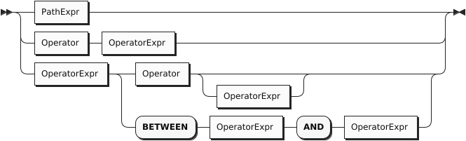
The language provides a full set of operators that you can use within its statements. Here are the categories of operators:
- Arithmetic Operators, to perform basic mathematical operations;
- Collection Operators, to evaluate expressions on collections or objects;
- Comparison Operators, to compare two expressions;
- Logical Operators, to combine operators using Boolean logic.
The following table summarizes the precedence order (from higher to lower) of the major unary and binary operators:
| Operator | Operation |
|---|---|
| EXISTS, NOT EXISTS | Collection emptiness testing |
| ^ | Exponentiation |
| *, /, DIV, MOD (%) | Multiplication, division, modulo |
| +, - | Addition, subtraction |
| || | String concatenation |
| IS NULL, IS NOT NULL, IS MISSING, IS NOT MISSING, IS UNKNOWN, IS NOT UNKNOWN, IS VALUED, IS NOT VALUED |
Unknown value comparison |
| BETWEEN, NOT BETWEEN | Range comparison (inclusive on both sides) |
| =, !=, <>, <, >, <=, >=, LIKE, NOT LIKE, IN, NOT IN | Comparison |
| NOT | Logical negation |
| AND | Conjunction |
| OR | Disjunction |
In general, if any operand evaluates to a MISSING value, the enclosing operator will return MISSING; if none of the operands evaluates to a MISSING value but there is an operand which evaluates to a NULL value, the enclosing operator will return NULL. However, there are a few exceptions listed in comparison operators and logical operators.
Arithmetic Operators
Arithmetic operators are used to exponentiate, add, subtract, multiply, and divide numeric values, or concatenate string values.
| Operator | Purpose | Example |
|---|---|---|
| +, - | As unary operators, they denote a positive or negative expression |
SELECT VALUE -1; |
| +, - | As binary operators, they add or subtract | SELECT VALUE 1 + 2; |
| * | Multiply | SELECT VALUE 4 * 2; |
| / | Divide (returns a value of type double if both operands are integers) | SELECT VALUE 5 / 2; |
| DIV | Divide (returns an integer value if both operands are integers) | SELECT VALUE 5 DIV 2; |
| MOD (%) | Modulo | SELECT VALUE 5 % 2; |
| ^ | Exponentiation | SELECT VALUE 2^3; |
| || | String concatenation | SELECT VALUE “ab”||“c”||“d”; |
Collection Operators
Collection operators are used for membership tests (IN, NOT IN) or empty collection tests (EXISTS, NOT EXISTS).
| Operator | Purpose | Example |
|---|---|---|
| IN | Membership test | FROM customers AS c WHERE c.address.zipcode IN [“02340”, “02115”] SELECT *; |
| NOT IN | Non-membership test | FROM customers AS c WHERE c.address.zipcode NOT IN [“02340”, “02115”] SELECT *; |
| EXISTS | Check whether a collection is not empty | FROM orders AS o WHERE EXISTS o.items SELECT *; |
| NOT EXISTS | Check whether a collection is empty | FROM orders AS o WHERE NOT EXISTS o.items SELECT *; |
Comparison Operators
Comparison operators are used to compare values.
The comparison operators fall into one of two sub-categories: missing value comparisons and regular value comparisons. SQL++ (and JSON) has two ways of representing missing information in an object — the presence of the field with a NULL for its value (as in SQL), and the absence of the field (which JSON permits). For example, the first of the following objects represents Jack, whose friend is Jill. In the other examples, Jake is friendless à la SQL, with a friend field that is NULL, while Joe is friendless in a more natural (for JSON) way, i.e., by not having a friend field.
Examples
{"name": "Jack", "friend": "Jill"}
{"name": "Jake", "friend": NULL}
{"name": "Joe"}
The following table enumerates all of the comparison operators available in SQL++.
| Operator | Purpose | Example |
|---|---|---|
| IS NULL | Test if a value is NULL | FROM customers AS c WHERE c.name IS NULL SELECT *; |
| IS NOT NULL | Test if a value is not NULL | FROM customers AS c WHERE c.name IS NOT NULL SELECT *; |
| IS MISSING | Test if a value is MISSING | FROM customers AS c WHERE c.name IS MISSING SELECT *; |
| IS NOT MISSING | Test if a value is not MISSING | FROM customers AS c WHERE c.name IS NOT MISSING SELECT *; |
| IS UNKNOWN | Test if a value is NULL or MISSING | FROM customers AS c WHERE c.name IS UNKNOWN SELECT *; |
| IS NOT UNKNOWN | Test if a value is neither NULL nor MISSING | FROM customers AS c WHERE c.name IS NOT UNKNOWN SELECT *; |
| IS KNOWN (IS VALUED) | Test if a value is neither NULL nor MISSING | FROM customers AS c WHERE c.name IS KNOWN SELECT *; |
| IS NOT KNOWN (IS NOT VALUED) | Test if a value is NULL or MISSING | FROM customers AS c WHERE c.name IS NOT KNOWN SELECT *; |
| BETWEEN | Test if a value is between a start value and a end value. The comparison is inclusive of both the start and end values. | FROM customers AS c WHERE c.rating BETWEEN 600 AND 700 SELECT *; |
| = | Equality test | FROM customers AS c WHERE c.rating = 640 SELECT *; |
| != | Inequality test | FROM customers AS c WHERE c.rating != 640 SELECT *; |
| <> | Inequality test | FROM customers AS c WHERE c.rating <> 640 SELECT *; |
| < | Less than | FROM customers AS c WHERE c.rating < 640 SELECT *; |
| > | Greater than | FROM customers AS c WHERE c.rating > 640 SELECT *; |
| <= | Less than or equal to | FROM customers AS c WHERE c.rating <= 640 SELECT *; |
| >= | Greater than or equal to | FROM customers AS c WHERE c.rating >= 640 SELECT *; |
| LIKE | Test if the left side matches a pattern defined on the right side; in the pattern, “%” matches any string while “_” matches any character. | FROM customers AS c WHERE c.name LIKE “%Dodge%” SELECT *; |
| NOT LIKE | Test if the left side does not match a pattern defined on the right side; in the pattern, “%” matches any string while “_” matches any character. | FROM customers AS c WHERE c.name NOT LIKE “%Dodge%” SELECT *; |
The following table summarizes how the missing value comparison operators work.
| Operator | Non-NULL/Non-MISSING value | NULL value | MISSING value |
|---|---|---|---|
| IS NULL | FALSE | TRUE | MISSING |
| IS NOT NULL | TRUE | FALSE | MISSING |
| IS MISSING | FALSE | FALSE | TRUE |
| IS NOT MISSING | TRUE | TRUE | FALSE |
| IS UNKNOWN | FALSE | TRUE | TRUE |
| IS NOT UNKNOWN | TRUE | FALSE | FALSE |
| IS KNOWN (IS VALUED) | TRUE | FALSE | FALSE |
| IS NOT KNOWN (IS NOT VALUED) | FALSE | TRUE | TRUE |
Logical Operators
Logical operators perform logical NOT, AND, and OR operations over Boolean values (TRUE and FALSE) plus NULL and MISSING.
| Operator | Purpose | Example |
|---|---|---|
| NOT | Returns true if the following condition is false, otherwise returns false | SELECT VALUE NOT 1 = 1; Returns FALSE |
| AND | Returns true if both branches are true, otherwise returns false | SELECT VALUE 1 = 2 AND 1 = 1; Returns FALSE |
| OR | Returns true if one branch is true, otherwise returns false | SELECT VALUE 1 = 2 OR 1 = 1; Returns TRUE |
The following table is the truth table for AND and OR.
| A | B | A AND B | A OR B |
|---|---|---|---|
| TRUE | TRUE | TRUE | TRUE |
| TRUE | FALSE | FALSE | TRUE |
| TRUE | NULL | NULL | TRUE |
| TRUE | MISSING | MISSING | TRUE |
| FALSE | FALSE | FALSE | FALSE |
| FALSE | NULL | FALSE | NULL |
| FALSE | MISSING | FALSE | MISSING |
| NULL | NULL | NULL | NULL |
| NULL | MISSING | MISSING | NULL |
| MISSING | MISSING | MISSING | MISSING |
The following table demonstrates the results of NOT on all possible inputs.
| A | NOT A |
|---|---|
| TRUE | FALSE |
| FALSE | TRUE |
| NULL | NULL |
| MISSING | MISSING |
Quantified Expressions
QuantifiedExpr
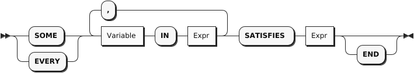
Synonym for SOME: ANY
Quantified expressions are used for expressing existential or universal predicates involving the elements of a collection.
The following pair of examples illustrate the use of a quantified expression to test that every (or some) element in the set [1, 2, 3] of integers is less than three. The first example yields FALSE and second example yields TRUE.
It is useful to note that if the set were instead the empty set, the first expression would yield TRUE (“every” value in an empty set satisfies the condition) while the second expression would yield FALSE (since there isn’t “some” value, as there are no values in the set, that satisfies the condition).
A quantified expression will return a NULL (or MISSING) if the first expression in it evaluates to NULL (or MISSING). Otherwise, a type error will be raised if the first expression in a quantified expression does not return a collection.
Path Expressions
PathExpr
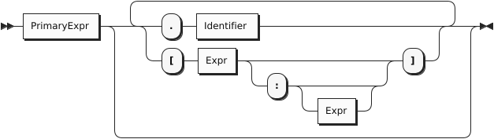
Components of complex types in the data model are accessed via path expressions. Path access can be applied to the result of a query expression that yields an instance of a complex type, for example, an object or an array instance.
For objects, path access is based on field names, and it accesses the field whose name was specified.
For arrays, path access is based on (zero-based) array-style indexing. Array indices can be used to retrieve either a single element from an array, or a whole subset of an array. Accessing a single element is achieved by providing a single index argument (zero-based element position), while obtaining a subset of an array is achieved by providing the start and end (zero-based) index positions; the returned subset is from position start to position end - 1; the end position argument is optional. If a position argument is negative then the element position is counted from the end of the array (-1 addresses the last element, -2 next to last, and so on).
Multisets have similar behavior to arrays, except for retrieving arbitrary items as the order of items is not fixed in multisets.
Attempts to access non-existent fields or out-of-bound array elements produce the special value MISSING. Type errors will be raised for inappropriate use of a path expression, such as applying a field accessor to a numeric value.
The following examples illustrate field access for an object, index-based element access or subset retrieval of an array, and also a composition thereof.
Examples
({"name": "MyABCs", "array": [ "a", "b", "c"]}).array -- ➊
(["a", "b", "c"])[2] -- ➋
(["a", "b", "c"])[-1] -- ➌
({"name": "MyABCs", "array": [ "a", "b", "c"]}).array[2] -- ➍
(["a", "b", "c"])[0:2] -- ➎
(["a", "b", "c"])[0:] -- ➏
(["a", "b", "c"])[-2:-1] -- ➐
➀ Returns [["a", "b", "c"]]
➁ Returns ["c"]
➂ Returns ["c"]
➃ Returns ["c"]
➄ Returns [["a", "b"]]
➅ Returns [["a", "b", "c"]]
➆ Returns [["b"]]
Primary Expressions
PrimaryExpr
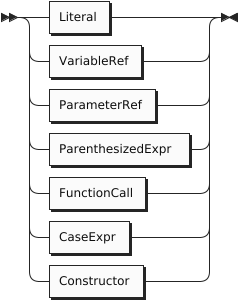
The most basic building block for any expression in SQL++ is Primary Expression. This can be a simple literal (constant) value, a reference to a query variable that is in scope, a parenthesized expression, a function call, or a newly constructed instance of the data model (such as a newly constructed object, array, or multiset of data model instances).
Literals
Literal
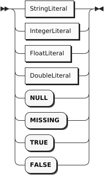
The simplest kind of expression is a literal that directly represents a value in JSON format. Here are some examples:
-42 "Hello" true false null
Numeric literals may include a sign and an optional decimal point. They may also be written in exponential notation, like this:
5e2 -4.73E-2
String literals may be enclosed in either single quotes or double quotes. Inside a string literal, the delimiter character for that string must be “escaped” by a backward slash, as in these examples:
"I read \"War and Peace\" today." 'I don\'t believe everything I read.'
The table below shows how to escape characters in SQL++.
| Character Name | Escape Method |
|---|---|
| Single Quote | \' |
| Double Quote | \" |
| Backslash | \\ |
| Slash | \/ |
| Backspace | \b |
| Formfeed | \f |
| Newline | \n |
| CarriageReturn | \r |
| EscapeTab | \t |
Identifiers and Variable References
Like SQL, SQL++ makes use of a language construct called an identifier. An identifier starts with an alphabetic character or the underscore character _ , and contains only case-sensitive alphabetic characters, numeric digits, or the special characters _ and $. It is also possible for an identifier to include other special characters, or to be the same as a reserved word, by enclosing the identifier in back-ticks (it’s then called a delimited identifier). Identifiers are used in variable names and in certain other places in SQL++ syntax, such as in path expressions, which we’ll discuss soon. Here are some examples of identifiers:
X customer_name `SELECT` `spaces in here` `@&#`
A very simple kind of SQL++ expression is a variable, which is simply an identifier. As in SQL, a variable can be bound to a value, which may be an input dataset, some intermediate result during processing of a query, or the final result of a query. We’ll learn more about variables when we discuss queries.
Note that the SQL++ rules for delimiting strings and identifiers are different from the SQL rules. In SQL, strings are always enclosed in single quotes, and double quotes are used for delimited identifiers.
Parameter References
A parameter reference is an external variable. Its value is provided using the statement execution API.
Parameter references come in two forms, Named Parameter References and Positional Parameter References.
Named parameter references consist of the “$” symbol followed by an identifier or delimited identifier.
Positional parameter references can be either a “$” symbol followed by one or more digits or a “?” symbol. If numbered, positional parameters start at 1. “?” parameters are interpreted as $1 to $N based on the order in which they appear in the statement.
Parameter references may appear as shown in the below examples:
Parenthesized Expressions
Function Calls
DataverseName
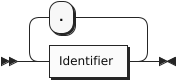
Functions are included in SQL++, like most languages, as a way to package useful functionality or to componentize complicated or reusable computations. A function call is a legal query expression that represents the value resulting from the evaluation of its body expression with the given parameter bindings; the parameter value bindings can themselves be any expressions in SQL++.
Note that Window functions, and aggregate functions used as window functions, have a more complex syntax. Window function calls are described in the section on Window Queries.
Also note that FILTER expressions can only be specified when calling Aggregation Pseudo-Functions.
The following example is a function call expression whose value is 8.
Case Expressions
SearchedCaseExpr
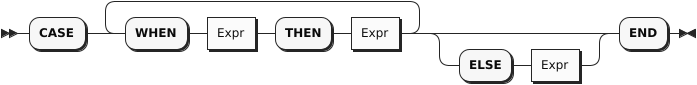
In a simple CASE expression, the query evaluator searches for the first WHEN … THEN pair in which the WHEN expression is equal to the expression following CASE and returns the expression following THEN. If none of the WHEN … THEN pairs meet this condition, and an ELSE branch exists, it returns the ELSE expression. Otherwise, NULL is returned.
In a searched CASE expression, the query evaluator searches from left to right until it finds a WHEN expression that is evaluated to TRUE, and then returns its corresponding THEN expression. If no condition is found to be TRUE, and an ELSE branch exists, it returns the ELSE expression. Otherwise, it returns NULL.
The following example illustrates the form of a case expression.
Constructors
MultisetConstructor
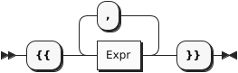
Structured JSON values can be represented by constructors, as in these examples:
{ "name": "Bill", "age": 42 } -- ➊
[ 1, 2, "Hello", null ] -- ➋
➀ An object
➁ An array
In a constructed object, the names of the fields must be strings (either literal strings or computed strings), and an object may not contain any duplicate names. Of course, structured literals can be nested, as in this example:
[ {"name": "Bill",
"address":
{"street": "25 Main St.",
"city": "Cincinnati, OH"
}
},
{"name": "Mary",
"address":
{"street": "107 Market St.",
"city": "St. Louis, MO"
}
}
]
The array items in an array constructor, and the field-names and field-values in an object constructor, may be represented by expressions. For example, suppose that the variables firstname, lastname, salary, and bonus are bound to appropriate values. Then structured values might be constructed by the following expressions:
An object:
{
"name": firstname || " " || lastname,
"income": salary + bonus
}
An array:
["1984", lastname, salary + bonus, null]
If only one expression is specified instead of the field-name/field-value pair in an object constructor then this expression is supposed to provide the field value. The field name is then automatically generated based on the kind of the value expression as in Q2.1:
- If it is a variable reference expression then the generated field name is the name of that variable.
- If it is a field access expression then the generated field name is the last identifier in that expression.
- For all other cases, a compilation error will be raised.
Example
(Q2.1)
FROM customers AS c
WHERE c.custid = "C47"
SELECT VALUE {c.name, c.rating}
This query outputs:
[
{
"name": "S. Logan",
"rating": 625
}
]
3. Queries
A query can be an expression, or it can be constructed from blocks of code called query blocks. A query block may contain several clauses, including SELECT, FROM, LET, WHERE, GROUP BY, and HAVING.
StreamGenerator
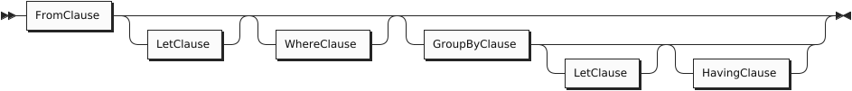
Note that, unlike SQL, SQL++ allows the SELECT clause to appear either at the beginning or at the end of a query block. For some queries, placing the SELECT clause at the end may make a query block easier to understand, because the SELECT clause refers to variables defined in the other clauses.
SELECT Clause
Projection
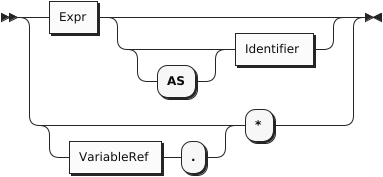
Synonyms for VALUE: ELEMENT, RAW
In a query block, the FROM, WHERE, GROUP BY, and HAVING clauses (if present) are collectively called the Stream Generator. All these clauses, taken together, generate a stream of tuples of bound variables. The SELECT clause then uses these bound variables to generate the output of the query block.
For example, the clause FROM customers AS c scans over the customers collection, binding the variable c to each customer object in turn, producing a stream of bindings.
Here’s a slightly more complex example of a stream generator:
Example
FROM customers AS c, orders AS o WHERE c.custid = o.custid
In this example, the FROM clause scans over the customers and orders collections, producing a stream of variable pairs (c, o) in which c is bound to a customer object and o is bound to an order object. The WHERE clause then retains only those pairs in which the custid values of the two objects match.
The output of the query block is a collection containing one output item for each tuple produced by the stream generator. If the stream generator produces no tuples, the output of the query block is an empty collection. Depending on the SELECT clause, each output item may be an object or some other kind of value.
In addition to using the variables bound by previous clauses, the SELECT clause may create and bind some additional variables. For example, the clause SELECT salary + bonus AS pay creates the variable pay and binds it to the value of salary + bonus. This variable may then be used in a later ORDER BY clause.
In SQL++, the SELECT clause may appear either at the beginning or at the end of a query block. Since the SELECT clause depends on variables that are bound in the other clauses, the examples in this section place SELECT at the end of the query blocks.
SELECT VALUE
The SELECT VALUE clause returns an array or multiset that contains the results of evaluating the VALUE expression, with one evaluation being performed per “binding tuple” (i.e., per FROM clause item) satisfying the statement’s selection criteria. If there is no FROM clause, the expression after VALUE is evaluated once with no binding tuples (except those inherited from an outer environment).
SQL-style SELECT
Traditional SQL-style SELECT syntax is also supported in SQL++, however the result of a query is not guaranteed to preserve the order of expressions in the SELECT clause.
Example
(Q3.3) The following query returns the names and customers ids of any customers whose rating is 750.
FROM customers AS c WHERE c.rating = 750 SELECT c.name AS customer_name, c.custid AS customer_id;
Result:
[
{
"customer_id": "C13",
"customer_name": "T. Cody"
},
{
"customer_id": "C37",
"customer_name": "T. Henry"
}
]
SELECT *
As in SQL, the phrase SELECT * suggests, “select everything.”
For each binding tuple in the stream, SELECT * produces an output object. For each variable in the binding tuple, the output object contains a field: the name of the field is the name of the variable, and the value of the field is the value of the variable. Essentially, SELECT * means, “return all the bound variables, with their names and values.”
The effect of SELECT * can be illustrated by an example based on two small collections named ages and eyes. The contents of the two collections are as follows:
ages:
[
{ "name": "Bill", "age": 21 },
{ "name": "Sue", "age": 32 }
]
eyes:
[
{ "name": "Bill", "eyecolor": "brown" },
{ "name": "Sue", "eyecolor": "blue" }
]
The following example applies SELECT * to a single collection.
Example
(Q3.4a) Return all the information in the ages collection.
FROM ages AS a SELECT * ;
Result:
[
{ "a": { "name": "Bill", "age": 21 },
},
{ "a": { "name": "Sue", "age": 32}
}
]
Note that the variable-name a appears in the query result. If the FROM clause had been simply FROM ages (omitting AS a), the variable-name in the query result would have been ages.
The next example applies SELECT * to a join of two collections.
Example
(Q3.4b) Return all the information in a join of ages and eyes on matching name fields.
FROM ages AS a, eyes AS e WHERE a.name = e.name SELECT * ;
Result:
[
{ "a": { "name": "Bill", "age": 21 },
"e": { "name": "Bill", "eyecolor": "Brown" }
},
{ "a": { "name": "Sue", "age": 32 },
"e": { "name": "Sue", "eyecolor": "Blue" }
}
]
Note that the result of SELECT * in SQL++ is more complex than the result of SELECT * in SQL.
SELECT variable.*
SQL++ has an alternative version of SELECT * in which the star is preceded by a variable.
Whereas the version without a named variable means, “return all the bound variables, with their names and values,” SELECT variable .* means “return only the named variable, and return only its value, not its name.”
The following example can be compared with (Q3.4a) to see the difference between the two versions of SELECT *:
Example
(Q3.4c) Return all information in the ages collection.
FROM ages AS a SELECT a.*
Result:
[
{ "name": "Bill", "age": 21 },
{ "name": "Sue", "age": 32 }
]
Note that, for queries over a single collection, SELECT variable .* returns a simpler result and therefore may be preferable to SELECT *.
In fact, SELECT variable .*, like SELECT * in SQL, is equivalent to a SELECT clause that enumerates all the fields of the collection, as in (Q3.4d):
Example
(Q3.4d) Return all the information in the ages collection.
FROM ages AS a SELECT a.name, a.age
(same result as (Q3.4c))
SELECT variable .* has an additional application. It can be used to return all the fields of a nested object. To illustrate this use, we will use the customers dataset in the example database — see Appendix 4.
SELECT DISTINCT
The DISTINCT keyword is used to eliminate duplicate items from the results of a query block.
Unnamed Projections
Similar to standard SQL, the query language supports unnamed projections (a.k.a, unnamed SELECT clause items), for which names are generated rather than user-provided. Name generation has three cases:
- If a projection expression is a variable reference expression, its generated name is the name of the variable.
- If a projection expression is a field access expression, its generated name is the last identifier in the expression.
- For all other cases, the query processor will generate a unique name.
Example
(Q3.6) Returns the last digit and the order date of all orders for the customer whose ID is “C41”.
FROM orders AS o WHERE o.custid = "C41" SELECT o.orderno % 1000, o.order_date;
Result:
[
{
"$1": 1,
"order_date": "2020-04-29"
},
{
"$1": 6,
"order_date": "2020-09-02"
}
]
In the result, $1 is the generated name for o.orderno % 1000, while order_date is the generated name for o.order_date. It is good practice, however, to not rely on the randomly generated names which can be confusing and irrelevant. Instead, practice good naming conventions by providing a meaningful and concise name which properly describes the selected item.
Abbreviated Field Access Expressions
As in standard SQL, field access expressions can be abbreviated when there is no ambiguity. In the next example, the variable o is the only possible variable reference for fields orderno and order_date and thus could be omitted in the query. This practice is not recommended, however, as queries may have fields (such as custid) which can be present in multiple datasets. More information on abbreviated field access can be found in the appendix section on Variable Resolution.
Example
(Q3.7) Same as Q3.6, omitting the variable reference for the order number and date and providing custom names for SELECT clause items.
FROM orders AS o WHERE o.custid = "C41" SELECT orderno % 1000 AS last_digit, order_date;
Result:
[
{
"last_digit": 1,
"order_date": "2020-04-29"
},
{
"last_digit": 6,
"order_date": "2020-09-02"
}
]
FROM Clause
UnnestStep
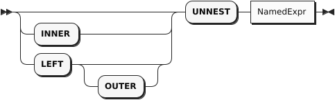
Synonyms for UNNEST: CORRELATE, FLATTEN
The purpose of a FROM clause is to iterate over a collection, binding a variable to each item in turn. Here’s a query that iterates over the customers dataset, choosing certain customers and returning some of their attributes.
Example
(Q3.8) List the customer ids and names of the customers in zipcode 63101, in order by their customer IDs.
FROM customers WHERE address.zipcode = "63101" SELECT custid AS customer_id, name ORDER BY customer_id;
Result:
[
{
"customer_id": "C13",
"name": "T. Cody"
},
{
"customer_id": "C31",
"name": "B. Pruitt"
},
{
"customer_id": "C41",
"name": "R. Dodge"
}
]
Let’s take a closer look at what this FROM clause is doing. A FROM clause always produces a stream of bindings, in which an iteration variable is bound in turn to each item in a collection. In Q3.8, since no explicit iteration variable is provided, the FROM clause defines an implicit variable named customers, the same name as the dataset that is being iterated over. The implicit iteration variable serves as the object-name for all field-names in the query block that do not have explicit object-names. Thus, address.zipcode really means customers.address.zipcode, custid really means customers.custid, and name really means customers.name.
You may also provide an explicit iteration variable, as in this version of the same query:
Example
(Q3.9) Alternative version of Q3.8 (same result).
FROM customers AS c WHERE c.address.zipcode = "63101" SELECT c.custid AS customer_id, c.name ORDER BY customer_id;
In Q3.9, the variable c is bound to each customer object in turn as the query iterates over the customers dataset. An explicit iteration variable can be used to identify the fields of the referenced object, as in c.name in the SELECT clause of Q3.9. When referencing a field of an object, the iteration variable can be omitted when there is no ambiguity. For example, c.name could be replaced by name in the SELECT clause of Q3.9. That’s why field-names like name and custid could stand by themselves in the Q3.8 version of this query.
In the examples above, the FROM clause iterates over the objects in a dataset. But in general, a FROM clause can iterate over any collection. For example, the objects in the orders dataset each contain a field called items, which is an array of nested objects. In some cases, you will write a FROM clause that iterates over a nested array like items.
The stream of objects (more accurately, variable bindings) that is produced by the FROM clause does not have any particular order. The system will choose the most efficient order for the iteration. If you want your query result to have a specific order, you must use an ORDER BY clause.
It’s good practice to specify an explicit iteration variable for each collection in the FROM clause, and to use these variables to qualify the field-names in other clauses. Here are some reasons for this convention:
-
It’s nice to have different names for the collection as a whole and an object in the collection. For example, in the clause FROM customers AS c, the name customers represents the dataset and the name c represents one object in the dataset.
-
In some cases, iteration variables are required. For example, when joining a dataset to itself, distinct iteration variables are required to distinguish the left side of the join from the right side.
-
In a subquery it’s sometimes necessary to refer to an object in an outer query block (this is called a correlated subquery). To avoid confusion in correlated subqueries, it’s best to use explicit variables.
Joins
A FROM clause gets more interesting when there is more than one collection involved. The following query iterates over two collections: customers and orders. The FROM clause produces a stream of binding tuples, each containing two variables, c and o. In each binding tuple, c is bound to an object from customers, and o is bound to an object from orders. Conceptually, at this point, the binding tuple stream contains all possible pairs of a customer and an order (this is called the Cartesian product of customers and orders). Of course, we are interested only in pairs where the custid fields match, and that condition is expressed in the WHERE clause, along with the restriction that the order number must be 1001.
Example
(Q3.10) Create a packing list for order number 1001, showing the customer name and address and all the items in the order.
FROM customers AS c, orders AS o
WHERE c.custid = o.custid
AND o.orderno = 1001
SELECT o.orderno,
c.name AS customer_name,
c.address,
o.items AS items_ordered;
Result:
[
{
"orderno": 1001,
"customer_name": "R. Dodge",
"address": {
"street": "150 Market St.",
"city": "St. Louis, MO",
"zipcode": "63101"
},
"items_ordered": [
{
"itemno": 347,
"qty": 5,
"price": 19.99
},
{
"itemno": 193,
"qty": 2,
"price": 28.89
}
]
}
]
Q3.10 is called a join query because it joins the customers collection and the orders collection, using the join condition c.custid = o.custid. In SQL++, as in SQL, you can express this query more explicitly by a JOIN clause that includes the join condition, as follows:
Example
(Q3.11) Alternative statement of Q3.10 (same result).
FROM customers AS c JOIN orders AS o
ON c.custid = o.custid
WHERE o.orderno = 1001
SELECT o.orderno,
c.name AS customer_name,
c.address,
o.items AS items_ordered;
Whether you express the join condition in a JOIN clause or in a WHERE clause is a matter of taste; the result is the same. This manual will generally use a comma-separated list of collection-names in the FROM clause, leaving the join condition to be expressed elsewhere. As we’ll soon see, in some query blocks the join condition can be omitted entirely.
There is, however, one case in which an explicit JOIN clause is necessary. That is when you need to join collection A to collection B, and you want to make sure that every item in collection A is present in the query result, even if it doesn’t match any item in collection B. This kind of query is called a left outer join, and it is illustrated by the following example.
Example
(Q3.12) List the customer ID and name, together with the order numbers and dates of their orders (if any) of customers T. Cody and M. Sinclair.
FROM customers AS c LEFT OUTER JOIN orders AS o ON c.custid = o.custid WHERE c.name = "T. Cody" OR c.name = "M. Sinclair" SELECT c.custid, c.name, o.orderno, o.order_date ORDER BY c.custid, o.order_date;
Result:
[
{
"custid": "C13",
"orderno": 1002,
"name": "T. Cody",
"order_date": "2020-05-01"
},
{
"custid": "C13",
"orderno": 1007,
"name": "T. Cody",
"order_date": "2020-09-13"
},
{
"custid": "C13",
"orderno": 1008,
"name": "T. Cody",
"order_date": "2020-10-13"
},
{
"custid": "C13",
"orderno": 1009,
"name": "T. Cody",
"order_date": "2020-10-13"
},
{
"custid": "C25",
"name": "M. Sinclair"
}
]
As you can see from the result of this left outer join, our data includes four orders from customer T. Cody, but no orders from customer M. Sinclair. The behavior of left outer join in SQL++ is different from that of SQL. SQL would have provided M. Sinclair with an order in which all the fields were null. SQL++, on the other hand, deals with schemaless data, which permits it to simply omit the order fields from the outer join.
Now we’re ready to look at a new kind of join that was not provided (or needed) in original SQL. Consider this query:
Example
(Q3.13) For every case in which an item is ordered in a quantity greater than 100, show the order number, date, item number, and quantity.
FROM orders AS o, o.items AS i
WHERE i.qty > 100
SELECT o.orderno, o.order_date, i.itemno AS item_number,
i.qty AS quantity
ORDER BY o.orderno, item_number;
Result:
[
{
"orderno": 1002,
"order_date": "2020-05-01",
"item_number": 680,
"quantity": 150
},
{
"orderno": 1005,
"order_date": "2020-08-30",
"item_number": 347,
"quantity": 120
},
{
"orderno": 1006,
"order_date": "2020-09-02",
"item_number": 460,
"quantity": 120
}
]
Q3.13 illustrates a feature called left-correlation in the FROM clause. Notice that we are joining orders, which is a dataset, to items, which is an array nested inside each order. In effect, for each order, we are unnesting the items array and joining it to the order as though it were a separate collection. For this reason, this kind of query is sometimes called an unnesting query. The keyword UNNEST may be used whenever left-correlation is used in a FROM clause, as shown in this example:
Example
(Q3.14) Alternative statement of Q3.13 (same result).
FROM orders AS o UNNEST o.items AS i
WHERE i.qty > 100
SELECT o.orderno, o.order_date, i.itemno AS item_number,
i.qty AS quantity
ORDER BY o.orderno, item_number;
The results of Q3.13 and Q3.14 are exactly the same. UNNEST serves as a reminder that left-correlation is being used to join an object with its nested items. The join condition in Q3.14 is expressed by the left-correlation: each order o is joined to its own items, referenced as o.items. The result of the FROM clause is a stream of binding tuples, each containing two variables, o and i. The variable o is bound to an order and the variable i is bound to one item inside that order.
Like JOIN, UNNEST has a LEFT OUTER option. Q3.14 could have specified:
FROM orders AS o LEFT OUTER UNNEST o.items AS i
In this case, orders that have no nested items would appear in the query result.
LET Clause
LetClause
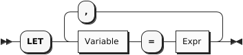
Synonyms for LET: LETTING
LET clauses can be useful when a (complex) expression is used several times within a query, allowing it to be written once to make the query more concise. The word LETTING can also be used, although this is not as common. The next query shows an example.
Example
(Q3.15) For each item in an order, the revenue is defined as the quantity times the price of that item. Find individual items for which the revenue is greater than 5000. For each of these, list the order number, item number, and revenue, in descending order by revenue.
FROM orders AS o, o.items AS i LET revenue = i.qty * i.price WHERE revenue > 5000 SELECT o.orderno, i.itemno, revenue ORDER by revenue desc;
Result:
[
{
"orderno": 1006,
"itemno": 460,
"revenue": 11997.6
},
{
"orderno": 1002,
"itemno": 460,
"revenue": 9594.05
},
{
"orderno": 1006,
"itemno": 120,
"revenue": 5525
}
]
The expression for computing revenue is defined once in the LET clause and then used three times in the remainder of the query. Avoiding repetition of the revenue expression makes the query shorter and less prone to errors.
WHERE Clause
WhereClause
The purpose of a WHERE clause is to operate on the stream of binding tuples generated by the FROM clause, filtering out the tuples that do not satisfy a certain condition. The condition is specified by an expression based on the variable names in the binding tuples. If the expression evaluates to true, the tuple remains in the stream; if it evaluates to anything else, including null or missing, it is filtered out. The surviving tuples are then passed along to the next clause to be processed (usually either GROUP BY or SELECT).
Often, the expression in a WHERE clause is some kind of comparison like quantity > 100. However, any kind of expression is allowed in a WHERE clause. The only thing that matters is whether the expression returns true or not.
Grouping
Grouping is especially important when manipulating hierarchies like the ones that are often found in JSON data. Often you will want to generate output data that includes both summary data and line items within the summaries. For this purpose, SQL++ supports several important extensions to the traditional grouping features of SQL. The familiar GROUP BY and HAVING clauses are still there, and they are joined by a new clause called GROUP AS. We’ll illustrate these clauses by a series of examples.
GROUP BY Clause
Example
(Q3.16) List the number of orders placed by each customer who has placed an order.
SELECT o.custid, COUNT(o.orderno) AS `order count` FROM orders AS o GROUP BY o.custid ORDER BY o.custid;
Result:
[
{
"order count": 4,
"custid": "C13"
},
{
"order count": 1,
"custid": "C31"
},
{
"order count": 1,
"custid": "C35"
},
{
"order count": 1,
"custid": "C37"
},
{
"order count": 2,
"custid": "C41"
}
]
The input to a GROUP BY clause is the stream of binding tuples generated by the FROM and WHEREclauses. In this query, before grouping, the variable o is bound to each object in the orders collection in turn.
SQL++ evaluates the expression in the GROUP BY clause, called the grouping expression, once for each of the binding tuples. It then organizes the results into groups in which the grouping expression has a common value (as defined by the = operator). In this example, the grouping expression is o.custid, and each of the resulting groups is a set of orders that have the same custid. If necessary, a group is formed for orders in which custid is null, and another group is formed for orders that have no custid. This query uses the aggregating function COUNT(o.orderno), which counts how many order numbers are in each group. If we are sure that each order object has a distinct orderno, we could also simply count the order objects in each group by using COUNT(*) in place of COUNT(o.orderno).
In the GROUP BYclause, you may optionally define an alias for the grouping expression. For example, in Q3.16, you could have written GROUP BY o.custid AS cid. The alias cid could then be used in place of the grouping expression in later clauses. In cases where the grouping expression contains an operator, it is especially helpful to define an alias (for example, GROUP BY salary + bonus AS pay).
Q3.16 had a single grouping expression, o.custid. If a query has multiple grouping expressions, the combination of grouping expressions is evaluated for every binding tuple, and the stream of binding tuples is partitioned into groups that have values in common for all of the grouping expressions. We’ll see an example of such a query in Q3.18.
After grouping, the number of binding tuples is reduced: instead of a binding tuple for each of the input objects, there is a binding tuple for each group. The grouping expressions (identified by their aliases, if any) are bound to the results of their evaluations. However, all the non-grouping fields (that is, fields that were not named in the grouping expressions), are accessible only in a special way: as an argument of one of the special aggregation pseudo-functions such as: SUM, AVG, MAX, MIN, STDEV and COUNT. The clauses that come after grouping can access only properties of groups, including the grouping expressions and aggregate properties of the groups such as COUNT(o.orderno) or COUNT(*). (We’ll see an exception when we discuss the new GROUP AS clause.)
You may notice that the results of Q3.16 do not include customers who have no orders. If we want to include these customers, we need to use an outer join between the customers and orders collections. This is illustrated by the following example, which also includes the name of each customer.
Example
(Q3.17) List the number of orders placed by each customer including those customers who have placed no orders.
SELECT c.custid, c.name, COUNT(o.orderno) AS `order count` FROM customers AS c LEFT OUTER JOIN orders AS o ON c.custid = o.custid GROUP BY c.custid, c.name ORDER BY c.custid;
Result:
[
{
"custid": "C13",
"order count": 4,
"name": "T. Cody"
},
{
"custid": "C25",
"order count": 0,
"name": "M. Sinclair"
},
{
"custid": "C31",
"order count": 1,
"name": "B. Pruitt"
},
{
"custid": "C35",
"order count": 1,
"name": "J. Roberts"
},
{
"custid": "C37",
"order count": 1,
"name": "T. Henry"
},
{
"custid": "C41",
"order count": 2,
"name": "R. Dodge"
},
{
"custid": "C47",
"order count": 0,
"name": "S. Logan"
}
]
Notice in Q3.17 what happens when the special aggregation function COUNT is applied to a collection that does not exist, such as the orders of M. Sinclair: it returns zero. This behavior is unlike that of the other special aggregation functions SUM, AVG, MAX, and MIN, which return null if their operand does not exist. This should make you cautious about the COUNT function: If it returns zero, that may mean that the collection you are counting has zero members, or that it does not exist, or that you have misspelled the collection’s name.
Q3.17 also shows how a query block can have more than one grouping expression. In general, the GROUP BYclause produces a binding tuple for each different combination of values for the grouping expressions. In Q3.17, the c.custid field uniquely identifies a customer, so adding c.name as a grouping expression does not result in any more groups. Nevertheless, c.name must be included as a grouping expression if it is to be referenced outside (after) the GROUP BY clause. If c.name were not included in the GROUP BY clause, it would not be a group property and could not be used in the SELECT clause.
Of course, a grouping expression need not be a simple field-name. In Q3.18, orders are grouped by month, using a temporal function to extract the month component of the order dates. In cases like this, it is helpful to define an alias for the grouping expression so that it can be referenced elsewhere in the query e.g. in the SELECT clause.
Example
(Q3.18) Find the months in 2020 that had the largest numbers of orders; list the months and their numbers of orders. (Return the top three.)
FROM orders AS o WHERE get_year(date(o.order_date)) = 2020 GROUP BY get_month(date(o.order_date)) AS month SELECT month, COUNT(*) AS order_count ORDER BY order_count desc LIMIT 3;
Result:
[
{
"month": 10,
"order_count": 2
},
{
"month": 9,
"order_count": 2
},
{
"month": 8,
"order_count": 1
}
]
Groups are commonly formed from named collections like customers and orders. But in some queries you need to form groups from a collection that is nested inside another collection, such as items inside orders. In SQL++ you can do this by using left-correlation in the FROM clause to unnest the inner collection, joining the inner collection with the outer collection, and then performing the grouping on the join, as illustrated in Q3.19.
Q3.19 also shows how a LET clause can be used after a GROUP BY clause to define an expression that is referenced multiple times in later clauses.
Example
(Q3.19) For each order, define the total revenue of the order as the sum of quantity times price for all the items in that order. List the total revenue for all the orders placed by the customer with id “C13”, in descending order by total revenue.
FROM orders as o, o.items as i WHERE o.custid = "C13" GROUP BY o.orderno LET total_revenue = sum(i.qty * i.price) SELECT o.orderno, total_revenue ORDER BY total_revenue desc;
Result:
[
{
"orderno": 1002,
"total_revenue": 10906.55
},
{
"orderno": 1008,
"total_revenue": 1999.8
},
{
"orderno": 1007,
"total_revenue": 130.45
}
]
HAVING Clause
HavingClause
The HAVING clause is very similar to the WHERE clause, except that it comes after GROUP BY and applies a filter to groups rather than to individual objects. Here’s an example of a HAVING clause that filters orders by applying a condition to their nested arrays of items.
By adding a HAVING clause to Q3.19, we can filter the results to include only those orders whose total revenue is greater than 1000, as shown in Q3.22.
Example
(Q3.20) Modify Q3.19 to include only orders whose total revenue is greater than 5000.
FROM orders AS o, o.items as i WHERE o.custid = "C13" GROUP BY o.orderno LET total_revenue = sum(i.qty * i.price) HAVING total_revenue > 5000 SELECT o.orderno, total_revenue ORDER BY total_revenue desc;
Result:
[
{
"orderno": 1002,
"total_revenue": 10906.55
}
]
Aggregation Pseudo-Functions
SQL provides several special functions for performing aggregations on groups including: SUM, AVG, MAX, MIN, and COUNT (some implementations provide more). These same functions are supported in SQL++. However, it’s worth spending some time on these special functions because they don’t behave like ordinary functions. They are called “pseudo-functions” here because they don’t evaluate their operands in the same way as ordinary functions. To see the difference, consider these two examples, which are syntactically similar:
Example 1
SELECT LENGTH(name) FROM customers
In Example 1, LENGTH is an ordinary function. It simply evaluates its operand (name) and then returns a result computed from the operand.
Example 2
SELECT AVG(rating) FROM customers
The effect of AVG in Example 2 is quite different. Rather than performing a computation on an individual rating value, AVG has a global effect: it effectively restructures the query. As a pseudo-function, AVG requires its operand to be a group; therefore, it automatically collects all the rating values from the query block and forms them into a group.
The aggregation pseudo-functions always require their operand to be a group. In some queries, the group is explicitly generated by a GROUP BY clause, as in Q3.21:
Example
(Q3.21) List the average credit rating of customers by zipcode.
FROM customers AS c GROUP BY c.address.zipcode AS zip SELECT zip, AVG(c.rating) AS `avg credit rating` ORDER BY zip;
Result:
[
{
"avg credit rating": 625
},
{
"avg credit rating": 657.5,
"zip": "02115"
},
{
"avg credit rating": 690,
"zip": "02340"
},
{
"avg credit rating": 695,
"zip": "63101"
}
]
Note in the result of Q3.21 that one or more customers had no zipcode. These customers were formed into a group for which the value of the grouping key is missing. When the query results were returned in JSON format, the missing key simply does not appear. Also note that the group whose key is missing appears first because missing is considered to be smaller than any other value. If some customers had had null as a zipcode, they would have been included in another group, appearing after the missing group but before the other groups.
When an aggregation pseudo-function is used without an explicit GROUP BY clause, it implicitly forms the entire query block into a single group, as in Q3.22:
Example
(Q3.22) Find the average credit rating among all customers.
FROM customers AS c SELECT AVG(c.rating) AS `avg credit rating`;
Result:
[
{
"avg credit rating": 670
}
]
The aggregation pseudo-function COUNT has a special form in which its operand is * instead of an expression.
For example, SELECT COUNT(*) FROM customers simply returns the total number of customers, whereas SELECT COUNT(rating) FROM customers returns the number of customers who have known ratings (that is, their ratings are not null or missing).
Because the aggregation pseudo-functions sometimes restructure their operands, they can be used only in query blocks where (explicit or implicit) grouping is being done. Therefore the pseudo-functions cannot operate directly on arrays or multisets. For operating directly on JSON collections, SQL++ provides a set of ordinary functions for computing aggregations. Each ordinary aggregation function (except the ones corresponding to COUNT and ARRAY_AGG) has two versions: one that ignores null and missing values and one that returns null if a null or missing value is encountered anywhere in the collection. The names of the aggregation functions are as follows:
| Aggregation pseudo-function; operates on groups only | Ordinary function: Ignores NULL or MISSING values | Ordinary function: Returns NULL if NULL or MISSING are encountered |
|---|---|---|
| SUM | ARRAY_SUM | STRICT_SUM |
| AVG | ARRAY_MAX | STRICT_MAX |
| MAX | ARRAY_MIN | STRICT_MIN |
| MIN | ARRAY_AVG | STRICT_AVG |
| COUNT | ARRAY_COUNT | STRICT_COUNT (see exception below) |
| STDDEV_SAMP | ARRAY_STDDEV_SAMP | STRICT_STDDEV_SAMP |
| STDDEV_POP | ARRAY_STDDEV_POP | STRICT_STDDEV_POP |
| VAR_SAMP | ARRAY_VAR_SAMP | STRICT_VAR_SAMP |
| VAR_POP | ARRAY_VAR_POP | STRICT_VAR_POP |
| SKEWENESS | ARRAY_SKEWNESS | STRICT_SKEWNESS |
| KURTOSIS | ARRAY_KURTOSIS | STRICT_KURTOSIS |
| ARRAY_AGG |
Exception: the ordinary aggregation function STRICT_COUNT operates on any collection, and returns a count of its items, including null values in the count. In this respect, STRICT_COUNT is more similar to COUNT(*) than to COUNT(expression).
Note that the ordinary aggregation functions that ignore null have names beginning with “ARRAY”. This naming convention has historical roots. Despite their names, the functions operate on both arrays and multisets.
Because of the special properties of the aggregation pseudo-functions, SQL (and therefore SQL++) is not a pure functional language. But every query that uses a pseudo-function can be expressed as an equivalent query that uses an ordinary function. Q3.23 is an example of how queries can be expressed without pseudo-functions. A more detailed explanation of all of the functions is also available in the section on Aggregate Functions.
Example
(Q3.23) Alternative form of Q3.22, using the ordinary function ARRAY_AVG rather than the aggregating pseudo-function AVG.
SELECT ARRAY_AVG(
(SELECT VALUE c.rating
FROM customers AS c) ) AS `avg credit rating`;
Result (same as Q3.22):
[
{
"avg credit rating": 670
}
]
If the function STRICT_AVG had been used in Q3.23 in place of ARRAY_AVG, the average credit rating returned by the query would have been null, because at least one customer has no credit rating.
GROUP AS Clause
GroupAsClause
JSON is a hierarchical format, and a fully featured JSON query language needs to be able to produce hierarchies of its own, with computed data at every level of the hierarchy. The key feature of SQL++ that makes this possible is the GROUP AS clause.
A query may have a GROUP AS clause only if it has a GROUP BY clause. The GROUP BY clause “hides” the original objects in each group, exposing only the grouping expressions and special aggregation functions on the non-grouping fields. The purpose of the GROUP AS clause is to make the original objects in the group visible to subsequent clauses. Thus the query can generate output data both for the group as a whole and for the individual objects inside the group.
For each group, the GROUP AS clause preserves all the objects in the group, just as they were before grouping, and gives a name to this preserved group. The group name can then be used in the FROM clause of a subquery to process and return the individual objects in the group.
To see how this works, we’ll write some queries that investigate the customers in each zipcode and their credit ratings. This would be a good time to review the sample database in Appendix 4. A part of the data is summarized below.
Customers in zipcode 02115:
C35, J. Roberts, rating 565
C37, T. Henry, rating 750
Customers in zipcode 02340:
C25, M. Sinclair, rating 690
Customers in zipcode 63101:
C13, T. Cody, rating 750
C31, B. Pruitt, (no rating)
C41, R. Dodge, rating 640
Customers with no zipcode:
C47, S. Logan, rating 625
Now let’s consider the effect of the following clauses:
FROM customers AS c GROUP BY c.address.zipcode GROUP AS g
This query fragment iterates over the customers objects, using the iteration variable c. The GROUP BY clause forms the objects into groups, each with a common zipcode (including one group for customers with no zipcode). After the GROUP BY clause, we can see the grouping expression, c.address.zipcode, but other fields such as c.custid and c.name are visible only to special aggregation functions.
The clause GROUP AS g now makes the original objects visible again. For each group in turn, the variable g is bound to a multiset of objects, each of which has a field named c, which in turn contains one of the original objects. Thus after GROUP AS g, for the group with zipcode 02115, g is bound to the following multiset:
[
{ "c":
{ "custid": "C35",
"name": "J. Roberts",
"address":
{ "street": "420 Green St.",
"city": "Boston, MA",
"zipcode": "02115"
},
"rating": 565
}
},
{ "c":
{ "custid": "C37",
"name": "T. Henry",
"address":
{ "street": "120 Harbor Blvd.",
"city": "St. Louis, MO",
"zipcode": "02115"
},
"rating": 750
}
}
]
Thus, the clauses following GROUP AS can see the original objects by writing subqueries that iterate over the multiset g.
The extra level named c was introduced into this multiset because the groups might have been formed from a join of two or more collections. Suppose that the FROM clause looked like FROM customers AS c, orders AS o. Then each item in the group would contain both a customers object and an orders object, and these two objects might both have a field with the same name. To avoid ambiguity, each of the original objects is wrapped in an “outer” object that gives it the name of its iteration variable in the FROM clause. Consider this fragment:
FROM customers AS c, orders AS o WHERE c.custid = o.custid GROUP BY c.address.zipcode GROUP AS g
In this case, following GROUP AS g, the variable g would be bound to the following collection:
[
{ "c": { an original customers object },
"o": { an original orders object }
},
{ "c": { another customers object },
"o": { another orders object }
},
...
]
After using GROUP AS to make the content of a group accessible, you will probably want to write a subquery to access that content. A subquery for this purpose is written in exactly the same way as any other subquery. The name specified in the GROUP AS clause (g in the above example) is the name of a collection of objects. You can write a FROM clause to iterate over the objects in the collection, and you can specify an iteration variable to represent each object in turn. For GROUP AS queries in this manual, we’ll use gas the name of the reconstituted group, and gi as an iteration variable representing one object inside the group. Of course, you can use any names you like for these purposes.
Now we are ready to take a look at how GROUP AS might be used in a query. Suppose that we want to group customers by zipcode, and for each group we want to see the average credit rating and a list of the individual customers in the group. Here’s a query that does that:
Example
(Q3.24) For each zipcode, list the average credit rating in that zipcode, followed by the customer numbers and names in numeric order.
FROM customers AS c
GROUP BY c.address.zipcode AS zip
GROUP AS g
SELECT zip, AVG(c.rating) AS `avg credit rating`,
(FROM g AS gi
SELECT gi.c.custid, gi.c.name
ORDER BY gi.c.custid) AS `local customers`
ORDER BY zip;
Result:
[
{
"avg credit rating": 625,
"local customers": [
{
"custid": "C47",
"name": "S. Logan"
}
]
},
{
"avg credit rating": 657.5,
"local customers": [
{
"custid": "C35",
"name": "J. Roberts"
},
{
"custid": "C37",
"name": "T. Henry"
}
],
"zip": "02115"
},
{
"avg credit rating": 690,
"local customers": [
{
"custid": "C25",
"name": "M. Sinclair"
}
],
"zip": "02340"
},
{
"avg credit rating": 695,
"local customers": [
{
"custid": "C13",
"name": "T. Cody"
},
{
"custid": "C31",
"name": "B. Pruitt"
},
{
"custid": "C41",
"name": "R. Dodge"
}
],
"zip": "63101"
}
]
Note that this query contains two ORDER BY clauses: one in the outer query and one in the subquery. These two clauses govern the ordering of the outer-level list of zipcodes and the inner-level lists of customers, respectively. Also note that the group of customers with no zipcode comes first in the output list.
Selection and UNION ALL
UnionOption
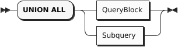
In a SQL++ query, two or more query blocks can be connected by the operator UNION ALL. The result of a UNION ALL between two query blocks contains all the items returned by the first query block, and all the items returned by the second query block. Duplicate items are not eliminated from the query result.
As in SQL, there is no ordering guarantee on the contents of the output stream. However, unlike SQL, the query language does not constrain what the data looks like on the input streams; in particular, it allows heterogeneity on the input and output streams. A type error will be raised if one of the inputs is not a collection.
When two or more query blocks are connected by UNION ALL, they can be followed by ORDER BY, LIMIT, and OFFSET clauses that apply to the UNION query as a whole. For these clauses to be meaningful, the field-names returned by the two query blocks should match. The following example shows a UNION ALL of two query blocks, with an ordering specified for the result.
In this example, a customer might be selected because he has ordered more than two different items (first query block) or because he has a high credit rating (second query block). By adding an explanatory string to each query block, the query writer can cause the output objects to be labeled to distinguish these two cases.
Example
(Q3.25a) Find customer ids for customers who have placed orders for more than two different items or who have a credit rating greater than 700, with labels to distinguish these cases.
FROM orders AS o, o.items AS i GROUP BY o.orderno, o.custid HAVING COUNT(*) > 2 SELECT DISTINCT o.custid AS customer_id, "Big order" AS reason UNION ALL FROM customers AS c WHERE rating > 700 SELECT c.custid AS customer_id, "High rating" AS reason ORDER BY customer_id;
Result:
[
{
"reason": "High rating",
"customer_id": "C13"
},
{
"reason": "Big order",
"customer_id": "C37"
},
{
"reason": "High rating",
"customer_id": "C37"
},
{
"reason": "Big order",
"customer_id": "C41"
}
]
If, on the other hand, you simply want a list of the customer ids and you don’t care to preserve the reasons, you can simplify your output by using SELECT VALUE, as follows:
(Q3.25b) Simplify Q3.25a to return a simple list of unlabeled customer ids.
FROM orders AS o, o.items AS i GROUP BY o.orderno, o.custid HAVING COUNT(*) > 2 SELECT VALUE o.custid UNION ALL FROM customers AS c WHERE rating > 700 SELECT VALUE c.custid;
Result:
[
"C37",
"C41",
"C13",
"C37"
]
WITH Clause
WithClause
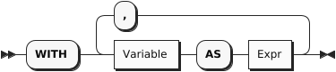
As in standard SQL, a WITH clause can be used to improve the modularity of a query. A WITH clause often contains a subquery that is needed to compute some result that is used later in the main query. In cases like this, you can think of the WITH clause as computing a “temporary view" of the input data. The next example uses a WITH clause to compute the total revenue of each order in 2020; then the main part of the query finds the minimum, maximum, and average revenue for orders in that year.
Example
(Q3.26) Find the minimum, maximum, and average revenue among all orders in 2020, rounded to the nearest integer.
WITH order_revenue AS
(FROM orders AS o, o.items AS i
WHERE get_year(date(o.order_date)) = 2020
GROUP BY o.orderno
SELECT o.orderno, SUM(i.qty * i.price) AS revenue
)
FROM order_revenue
SELECT AVG(revenue) AS average,
MIN(revenue) AS minimum,
MAX(revenue) AS maximum;
Result:
[
{
"average": 4669.99,
"minimum": 130.45,
"maximum": 18847.58
}
]
WITH can be particularly useful when a value needs to be used several times in a query.
ORDER BY, LIMIT, and OFFSET Clauses
OffsetClause
The last three (optional) clauses to be processed in a query are ORDER BY, LIMIT, and OFFSET.
The ORDER BY clause is used to globally sort data in either ascending order (i.e., ASC) or descending order (i.e., DESC). During ordering, MISSING and NULL are treated as being smaller than any other value if they are encountered in the ordering key(s). MISSING is treated as smaller than NULL if both occur in the data being sorted. The ordering of values of a given type is consistent with its type’s <= ordering; the ordering of values across types is implementation-defined but stable.
The LIMIT clause is used to limit the result set to a specified maximum size. The optional OFFSET clause is used to specify a number of items in the output stream to be discarded before the query result begins. The OFFSET can also be used as a standalone clause, without the LIMIT.
The following example illustrates use of the ORDER BY and LIMIT clauses.
Example
(Q3.27) Return the top three customers by rating.
FROM customers AS c SELECT c.custid, c.name, c.rating ORDER BY c.rating DESC LIMIT 3;
Result:
[
{
"custid": "C13",
"name": "T. Cody",
"rating": 750
},
{
"custid": "C37",
"name": "T. Henry",
"rating": 750
},
{
"custid": "C25",
"name": "M. Sinclair",
"rating": 690
}
]
The following example illustrates the use of OFFSET:
Subqueries
Subquery
A subquery is simply a query surrounded by parentheses. In SQL++, a subquery can appear anywhere that an expression can appear. Like any query, a subquery always returns a collection, even if the collection contains only a single value or is empty. If the subquery has a SELECT clause, it returns a collection of objects. If the subquery has a SELECT VALUE clause, it returns a collection of scalar values. If a single scalar value is expected, the indexing operator [0] can be used to extract the single scalar value from the collection.
Example
(Q3.29) (Subquery in SELECT clause) For every order that includes item no. 120, find the order number, customer id, and customer name.
Here, the subquery is used to find a customer name, given a customer id. Since the outer query expects a scalar result, the subquery uses SELECT VALUE and is followed by the indexing operator [0].
FROM orders AS o, o.items AS i
WHERE i.itemno = 120
SELECT o.orderno, o.custid,
(FROM customers AS c
WHERE c.custid = o.custid
SELECT VALUE c.name)[0] AS name;
Result:
[
{
"orderno": 1003,
"custid": "C31",
"name": "B. Pruitt"
},
{
"orderno": 1006,
"custid": "C41",
"name": "R. Dodge"
}
]
Example
(Q3.30) (Subquery in WHERE clause) Find the customer number, name, and rating of all customers whose rating is greater than the average rating.
Here, the subquery is used to find the average rating among all customers. Once again, SELECT VALUE and indexing [0] have been used to get a single scalar value.
FROM customers AS c1
WHERE c1.rating >
(FROM customers AS c2
SELECT VALUE AVG(c2.rating))[0]
SELECT c1.custid, c1.name, c1.rating;
Result:
[
{
"custid": "C13",
"name": "T. Cody",
"rating": 750
},
{
"custid": "C25",
"name": "M. Sinclair",
"rating": 690
},
{
"custid": "C37",
"name": "T. Henry",
"rating": 750
}
]
Example
(Q3.31) (Subquery in FROM clause) Compute the total revenue (sum over items of quantity time price) for each order, then find the average, maximum, and minimum total revenue over all orders.
Here, the FROM clause expects to iterate over a collection of objects, so the subquery uses an ordinary SELECT and does not need to be indexed. You might think of a FROM clause as a “natural home” for a subquery.
FROM
(FROM orders AS o, o.items AS i
GROUP BY o.orderno
SELECT o.orderno, SUM(i.qty * i.price) AS revenue
) AS r
SELECT AVG(r.revenue) AS average,
MIN(r.revenue) AS minimum,
MAX(r.revenue) AS maximum;
Result:
[
{
"average": 4669.99,
"minimum": 130.45,
"maximum": 18847.58
}
]
Note the similarity between Q3.26 and Q3.31. This illustrates how a subquery can often be moved into a WITH clause to improve the modularity and readability of a query.
4. Window Functions
Window functions are special functions that compute aggregate values over a “window” of input data. Like an ordinary function, a window function returns a value for every item in the input dataset. But in the case of a window function, the value returned by the function can depend not only on the argument of the function, but also on other items in the same collection. For example, a window function applied to a set of employees might return the rank of each employee in the set, as measured by salary. As another example, a window function applied to a set of items, ordered by purchase date, might return the running total of the cost of the items.
A window function call is identified by an OVER clause, which can specify three things: partitioning, ordering, and framing. The partitioning specification is like a GROUP BY: it splits the input data into partitions. For example, a set of employees might be partitioned by department. The window function, when applied to a given object, is influenced only by other objects in the same partition. The ordering specification is like an ORDER BY: it determines the ordering of the objects in each partition. The framing specification defines a “frame” that moves through the partition, defining how the result for each object depends on nearby objects. For example, the frame for a current object might consist of the two objects before and after the current one; or it might consist of all the objects before the current one in the same partition. A window function call may also specify some options that control (for example) how nulls are handled by the function.
Here is an example of a window function call:
SELECT deptno, purchase_date, item, cost,
SUM(cost) OVER (
PARTITION BY deptno
ORDER BY purchase_date
ROWS UNBOUNDED PRECEDING) AS running_total_cost
FROM purchases
ORDER BY deptno, purchase_date
This example partitions the purchases dataset by department number. Within each department, it orders the purchases by date and computes a running total cost for each item, using the frame specification ROWS UNBOUNDED PRECEDING. Note that the ORDER BY clause in the window function is separate and independent from the ORDER BY clause of the query as a whole.
The general syntax of a window function call is specified in this section. SQL++ has a set of builtin window functions, which are listed and explained in the Window Functions section of the builtin functions page. In addition, standard SQL aggregate functions such as SUM and AVG can be used as window functions if they are used with an OVER clause.
Window Function Call
WindowFunctionType
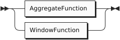
Refer to the Aggregate Functions section for a list of aggregate functions.
Refer to the Window Functions section for a list of window functions.
Window Function Arguments
WindowFunctionArguments
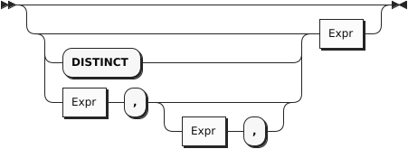
Refer to the Aggregate Functions section or the Window Functions section for details of the arguments for individual functions.
Window Function Options
WindowFunctionOptions
Window function options cannot be used with aggregate functions.
Window function options can only be used with some window functions, as described below.
The FROM modifier determines whether the computation begins at the first or last tuple in the window. It is optional and can only be used with the nth_value() function. If it is omitted, the default setting is FROM FIRST.
The NULLS modifier determines whether NULL values are included in the computation, or ignored. MISSING values are treated the same way as NULL values. It is also optional and can only be used with the first_value(), last_value(), nth_value(), lag(), and lead() functions. If omitted, the default setting is RESPECT NULLS.
Window Frame Variable
The AS keyword enables you to specify an alias for the window frame contents. It introduces a variable which will be bound to the contents of the frame. When using a built-in aggregate function as a window function, the function’s argument must be a subquery which refers to this alias, for example:
SELECT ARRAY_COUNT(DISTINCT (FROM alias SELECT VALUE alias.src.field)) OVER alias AS (PARTITION BY … ORDER BY …) FROM source AS src
The alias is not necessary when using a window function, or when using a standard SQL aggregate function with the OVER clause.
Window Definition
Window Partition Clause
WindowPartitionClause
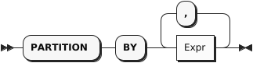
The window partition clause divides the tuples into logical partitions using one or more expressions.
This clause may be used with any window function, or any aggregate function used as a window function.
This clause is optional. If omitted, all tuples are united in a single partition.
Window Order Clause
WindowOrderClause
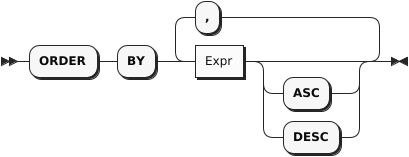
The window order clause determines how tuples are ordered within each partition. The window function works on tuples in the order specified by this clause.
This clause may be used with any window function, or any aggregate function used as a window function.
This clause is optional. If omitted, all tuples are considered peers, i.e. their order is tied. When tuples in the window partition are tied, each window function behaves differently.
-
The row_number() function returns a distinct number for each tuple. If tuples are tied, the results may be unpredictable.
-
The rank(), dense_rank(), percent_rank(), and cume_dist() functions return the same result for each tuple.
-
For other functions, if the window frame is defined by ROWS, the results may be unpredictable. If the window frame is defined by RANGE or GROUPS, the results are same for each tuple.
Note: This clause does not guarantee the overall order of the query results. To guarantee the order of the final results, use the query ORDER BY clause.
Window Frame Clause
WindowFrameClause
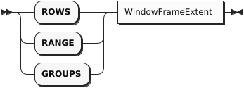
The window frame clause defines the window frame. It can be used with all aggregate functions and some window functions — refer to the descriptions of individual functions for more details. It is optional and allowed only when the window order clause is present.
-
If this clause is omitted and there is no window order clause, the window frame is the entire partition.
-
If this clause is omitted but there is a window order clause, the window frame becomes all tuples in the partition preceding the current tuple and its peers — the same as RANGE BETWEEN UNBOUNDED PRECEDING AND CURRENT ROW.
The window frame can be defined in the following ways:
-
ROWS: Counts the exact number of tuples within the frame. If window ordering doesn’t result in unique ordering, the function may produce unpredictable results. You can add a unique expression or more window ordering expressions to produce unique ordering.
-
RANGE: Looks for a value offset within the frame. The function produces deterministic results.
-
GROUPS: Counts all groups of tied rows within the frame. The function produces deterministic results.
Note: If this clause uses RANGE with either Expr PRECEDING or Expr FOLLOWING, the window order clause must have only a single ordering term. The ordering term expression must evaluate to a number. If these conditions are not met, the window frame will be empty, which means the window function will return its default value: in most cases this is null, except for strict_count() or array_count(), whose default value is 0. This restriction does not apply when the window frame uses ROWS or GROUPS.
Tip: The RANGE window frame is commonly used to define window frames based on date or time. If you want to use RANGE with either Expr PRECEDING or Expr FOLLOWING, and you want to use an ordering expression based on date or time, the expression in Expr PRECEDING or Expr FOLLOWING must use a data type that can be added to the ordering expression.
Window Frame Extent
WindowFrameExtent
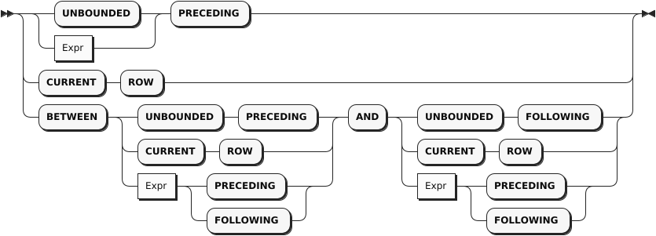
The window frame extent clause specifies the start point and end point of the window frame. The expression before AND is the start point and the expression after AND is the end point. If BETWEEN is omitted, you can only specify the start point; the end point becomes CURRENT ROW.
The window frame end point can’t be before the start point. If this clause violates this restriction explicitly, an error will result. If it violates this restriction implicitly, the window frame will be empty, which means the window function will return its default value: in most cases this is null, except for strict_count() or array_count(), whose default value is 0.
Window frame extents that result in an explicit violation are:
-
BETWEEN CURRENT ROW AND Expr PRECEDING
-
BETWEEN Expr FOLLOWING AND Expr PRECEDING
-
BETWEEN Expr FOLLOWING AND CURRENT ROW
Window frame extents that result in an implicit violation are:
-
BETWEEN UNBOUNDED PRECEDING AND Expr PRECEDING — if Expr is too high, some tuples may generate an empty window frame.
-
BETWEEN Expr PRECEDING AND Expr PRECEDING — if the second Expr is greater than or equal to the first Expr, all result sets will generate an empty window frame.
-
BETWEEN Expr FOLLOWING AND Expr FOLLOWING — if the first Expr is greater than or equal to the second Expr, all result sets will generate an empty window frame.
-
BETWEEN Expr FOLLOWING AND UNBOUNDED FOLLOWING — if Expr is too high, some tuples may generate an empty window frame.
-
If the window frame exclusion clause is present, any window frame specification may result in empty window frame.
The Expr must be a positive constant or an expression that evaluates as a positive number. For ROWS or GROUPS, the Expr must be an integer.
Window Frame Exclusion
WindowFrameExclusion
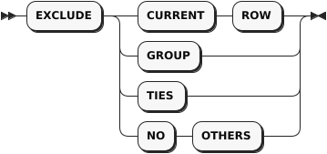
The window frame exclusion clause enables you to exclude specified tuples from the window frame.
This clause can be used with all aggregate functions and some window functions — refer to the descriptions of individual functions for more details.
This clause is allowed only when the window frame clause is present.
This clause is optional. If this clause is omitted, the default is no exclusion — the same as EXCLUDE NO OTHERS.
-
EXCLUDE CURRENT ROW: If the current tuple is still part of the window frame, it is removed from the window frame.
-
EXCLUDE GROUP: The current tuple and any peers of the current tuple are removed from the window frame.
-
EXCLUDE TIES: Any peers of the current tuple, but not the current tuple itself, are removed from the window frame.
-
EXCLUDE NO OTHERS: No additional tuples are removed from the window frame.
If the current tuple is already removed from the window frame, then it remains removed from the window frame.
5. Errors
A query can potentially result in one of the following errors:
- syntax error,
- identifier resolution error,
- type error,
- resource error.
If the query processor runs into any error, it will terminate the ongoing processing of the query and immediately return an error message to the client.
Syntax Errors
A valid query must satisfy the grammar rules of the query language. Otherwise, a syntax error will be raised.
Identifier Resolution Errors
Referring to an undefined identifier can cause an error if the identifier cannot be successfully resolved as a valid field access.
Example
(Q4.3)
FROM customer AS c SELECT *
If we have a typo as above in “customers” that misses the dataset name’s ending “s”, we will get an identifier resolution error as follows:
ERROR: Code: 1 "ASX1077: Cannot find dataset customer in dataverse Commerce nor an alias with name customer (in line 2, at column 7)"
Example
(Q4.4)
FROM customers AS c JOIN orders AS o ON c.custid = o.custid SELECT name, orderno;
If the compiler cannot figure out how to resolve an unqualified field name, which will occur if there is more than one variable in scope (e.g., customers AS c and orders AS o as above), we will get an identifier resolution error as follows:
ERROR: Code: 1 "ASX1074: Cannot resolve ambiguous alias reference for identifier name (in line 3, at column 9)"
The same can happen when failing to properly identify the GROUP BY expression.
(Q4.5)
SELECT o.custid, COUNT(o.orderno) AS `order count` FROM orders AS o GROUP BY custid;
Result:
ERROR: Code: 1 "ASX1073: Cannot resolve alias reference for undefined identifier o (in line 2, at column 8)"
Type Errors
The query compiler does type checks based on its available type information. In addition, the query runtime also reports type errors if a data model instance it processes does not satisfy the type requirement.
Example
(Q4.6)
get_day(10/11/2020);
Since function get_day can only process duration, daytimeduration, date, or datetime input values, we will get a type error as follows:
ERROR: Code: 1 "ASX0002: Type mismatch: function get-day expects its 1st input parameter to be of type duration, daytimeduration, date or datetime, but the actual input type is double (in line 2, at column 1)"
Resource Errors
A query can potentially exhaust system resources, such as the number of open files and disk spaces. For instance, the following two resource errors could be potentially be seen when running the system:
Error: no space left on device Error: too many open files
The “no space left on device” issue usually can be fixed by cleaning up disk space and reserving more disk space for the system. The “too many open files” issue usually can be fixed by a system administrator, following the instructions here.
6. Differences from SQL-92
SQL++ offers the following additional features beyond SQL-92:
- Fully composable and functional: A subquery can iterate over any intermediate collection and can appear anywhere in a query.
- Schema-free: The query language does not assume the existence of a static schema for any data that it processes.
- Correlated FROM terms: A right-side FROM term expression can refer to variables defined by FROM terms on its left.
- Powerful GROUP BY: In addition to a set of aggregate functions as in standard SQL, the groups created by the GROUP BY clause are directly usable in nested queries and/or to obtain nested results.
- Generalized SELECT clause: A SELECT clause can return any type of collection, while in SQL-92, a SELECT clause has to return a (homogeneous) collection of objects.
The following matrix is a quick “SQL-92 compatibility cheat sheet” for SQL++.
| Feature | SQL++ | SQL-92 | Why different? |
|---|---|---|---|
| SELECT * | Returns nested objects | Returns flattened concatenated objects | Nested collections are 1st class citizens |
| SELECT list | order not preserved | order preserved | Fields in a JSON object are not ordered |
| Subquery | Returns a collection | The returned collection is cast into a scalar value if the subquery appears in a SELECT list or on one side of a comparison or as input to a function | Nested collections are 1st class citizens |
| LEFT OUTER JOIN | Fills in MISSING(s) for non-matches | Fills in NULL(s) for non-matches | “Absence” is more appropriate than “unknown” here |
| UNION ALL | Allows heterogeneous inputs and output | Input streams must be UNION-compatible and output field names are drawn from the first input stream | Heterogenity and nested collections are common |
| IN constant_expr | The constant expression has to be an array or multiset, i.e., [..,..,…] | The constant collection can be represented as comma-separated items in a paren pair | Nested collections are 1st class citizens |
| String literal | Double quotes or single quotes | Single quotes only | Double quoted strings are pervasive in JSON |
| Delimited identifiers | Backticks | Double quotes | Double quoted strings are pervasive in JSON |
The following SQL-92 features are not implemented yet. However, SQL++ does not conflict with these features:
- CROSS JOIN, NATURAL JOIN, UNION JOIN
- FULL OUTER JOIN
- INTERSECT, EXCEPT, UNION with set semantics
- CAST expression
- ALL and SOME predicates for linking to subqueries
- UNIQUE predicate (tests a collection for duplicates)
- MATCH predicate (tests for referential integrity)
- Row and Table constructors
- Preserved order for expressions in a SELECT list
7. DDL and DML statements
SingleStmnt
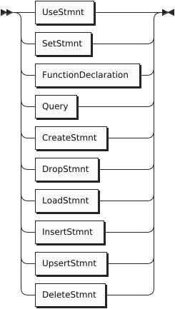
In addition to queries, an implementation of SQL++ needs to support statements for data definition and manipulation purposes as well as controlling the context to be used in evaluating query expressions. This section details the DDL and DML statements supported in SQL++ as realized today in Apache AsterixDB.
Lifecycle Management Statements
Set Statement
The SET statement can be used to override certain configuration parameters. More information about SET can be found in Appendix 2.
Function Declaration
When writing a complex query, it can sometimes be helpful to define one or more auxiliary functions that each address a sub-piece of the overall query.
The DECLARE FUNCTION statement supports the creation of such helper functions. In general, the function body (expression) can be any legal query expression.
The function named in the DECLARE FUNCTION statement is accessible only in the current query. To create a persistent function for use in multiple queries, use the CREATE FUNCTION statement.
Create Statement
Create Dataverse
CreateDataverse
The CREATE DATAVERSE statement is used to create new dataverses. To ease the authoring of reusable query scripts, an optional IF NOT EXISTS clause is included to allow creation to be requested either unconditionally or only if the dataverse does not already exist. If this clause is absent, an error is returned if a dataverse with the indicated name already exists.
The following example creates a new dataverse named Commerce if one does not already exist.
Create Type
TypeReference
The CREATE TYPE statement is used to create a new named datatype. This type can then be used to create stored collections or utilized when defining one or more other datatypes. Much more information about the data model is available in the data model reference guide. A new type can be a object type, a renaming of another type, an array type, or a multiset type. A object type can be defined as being either open or closed. Instances of a closed object type are not permitted to contain fields other than those specified in the create type statement. Instances of an open object type may carry additional fields, and open is the default for new types if neither option is specified.
The following example creates three new object types called addressType, customerType, and itemType. Their fields are essentially traditional typed name/value pairs (much like SQL fields). Since it is defined as (defaulting to) being an open type, instances will be permitted to contain more than what is specified in the type definition. Indeed many of the customer objects contain a rating as well, however this is not necessary for the customer object to be created. As can be seen in the sample data, customers can exist without ratings or with part (or all) of the address missing.
Example
CREATE TYPE addressType AS {
street: string,
city: string,
zipcode: string?
};
CREATE TYPE customerType AS {
custid: string,
name: string,
address: addressType?
};
CREATE TYPE itemType AS {
itemno: int,
qty: int,
price: int
};
Optionally, you may wish to create a type that has an automatically generated primary key field. The example below shows an alternate form of itemType which achieves this by setting its primary key, itemno, to UUID. (Refer to the Datasets section later for more details on such fields.)
Example
CREATE TYPE itemType AS {
itemno: uuid,
qty: int,
price: int
};
Note that the type of the itemno in this example is UUID. This field type can be used if you want to have an autogenerated-PK field. (Refer to the Datasets section later for more details on such fields.)
The next example creates a new object type, closed this time, called orderType. Instances of this closed type will not be permitted to have extra fields, although the ship_date field is marked as optional and may thus be NULL or MISSING in legal instances of the type. The items field is an array of instances of another object type, itemType.
Create Dataset
Properties
The CREATE DATASET statement is used to create a new dataset. Datasets are named, multisets of object type instances; they are where data lives persistently and are the usual targets for queries. Datasets are typed, and the system ensures that their contents conform to their type definitions. An Internal dataset (the default kind) is a dataset whose content lives within and is managed by the system. It is required to have a specified unique primary key field which uniquely identifies the contained objects. (The primary key is also used in secondary indexes to identify the indexed primary data objects.)
Internal datasets contain several advanced options that can be specified when appropriate. One such option is that random primary key (UUID) values can be auto-generated by declaring the field to be UUID and putting AUTOGENERATED after the PRIMARY KEY identifier. In this case, unlike other non-optional fields, a value for the auto-generated PK field should not be provided at insertion time by the user since each object’s primary key field value will be auto-generated by the system.
Another advanced option, when creating an Internal dataset, is to specify the merge policy to control which of the underlying LSM storage components to be merged. (The system supports Log-Structured Merge tree based physical storage for Internal datasets.) Currently the system supports four different component merging policies that can be chosen per dataset: no-merge, constant, prefix, and correlated-prefix. The no-merge policy simply never merges disk components. The constant policy merges disk components when the number of components reaches a constant number k that can be configured by the user. The prefix policy relies on both component sizes and the number of components to decide which components to merge. It works by first trying to identify the smallest ordered (oldest to newest) sequence of components such that the sequence does not contain a single component that exceeds some threshold size M and that either the sum of the component’s sizes exceeds M or the number of components in the sequence exceeds another threshold C. If such a sequence exists, the components in the sequence are merged together to form a single component. Finally, the correlated-prefix policy is similar to the prefix policy, but it delegates the decision of merging the disk components of all the indexes in a dataset to the primary index. When the correlated-prefix policy decides that the primary index needs to be merged (using the same decision criteria as for the prefix policy), then it will issue successive merge requests on behalf of all other indexes associated with the same dataset. The system’s default policy is the prefix policy except when there is a filter on a dataset, where the preferred policy for filters is the correlated-prefix.
Another advanced option shown in the syntax above, related to performance and mentioned above, is that a filter can optionally be created on a field to further optimize range queries with predicates on the filter’s field. Filters allow some range queries to avoid searching all LSM components when the query conditions match the filter. (Refer to Filter-Based LSM Index Acceleration for more information about filters.)
An External dataset, in contrast to an Internal dataset, has data stored outside of the system’s control. Files living in HDFS or in the local filesystem(s) of a cluster’s nodes are currently supported. External dataset support allows queries to treat foreign data as though it were stored in the system, making it possible to query “legacy” file data (for example, Hive data) without having to physically import it. When defining an External dataset, an appropriate adapter type must be selected for the desired external data. (See the Guide to External Data for more information on the available adapters.)
The following example creates an Internal dataset for storing customerType objects. It specifies that their custid field is their primary key.
Example
CREATE INTERNAL DATASET customers(customerType) PRIMARY KEY custid;
The next example creates an Internal dataset (the default kind when no dataset kind is specified) for storing itemType objects might look like. It specifies that the itemno field should be used as the primary key for the dataset. It also specifies that the itemno field is an auto-generated field, meaning that a randomly generated UUID value should be assigned to each incoming object by the system. (A user should therefore not attempt to provide a value for this field.)
Note that the itemno field’s declared type must be UUID in this case.
Example
CREATE DATASET MyItems(itemType) PRIMARY KEY itemno AUTOGENERATED;
Alternatively the dataset object type can be specified using inline type definition syntax.
Example
CREATE DATASET MyItems(itemno INT NOT UNKNOWN, qty INT NOT UNKNOWN, price INT NOT UNKNOWN) PRIMARY KEY itemno AUTOGENERATED;
The next example creates an External dataset for querying LineItemType objects. The choice of the hdfs adapter means that this dataset’s data actually resides in HDFS. The example CREATE statement also provides parameters used by the hdfs adapter: the URL and path needed to locate the data in HDFS and a description of the data format.
Create Index
IndexType
The CREATE INDEX statement creates a secondary index on one or more fields of a specified dataset. Supported index types include BTREE for totally ordered datatypes, RTREE for spatial data, and KEYWORD and NGRAM for textual (string) data. An index can be created on a nested field (or fields) by providing a valid path expression as an index field identifier. An array index can be created on an array or multiset datatype by providing a sequence of UNNEST and SELECTs to identify the field(s) to be indexed.
An indexed field is not required to be part of the datatype associated with a dataset if the dataset’s datatype is declared as open and if the field’s type is provided along with its name and if the ENFORCED keyword is specified at the end of the index definition. ENFORCING an open field introduces a check that makes sure that the actual type of the indexed field (if the optional field exists in the object) always matches this specified (open) field type.
The following example creates a btree index called cCustIdx on the custid field of the orders dataset. This index can be useful for accelerating exact-match queries, range search queries, and joins involving the custid field.
Example
CREATE INDEX cCustIdx ON orders(custid) TYPE BTREE;
The following example creates an open btree index called oCreatedTimeIdx on the (non-declared) createdTime field of the orders dataset having datetime type. This index can be useful for accelerating exact-match queries, range search queries, and joins involving the createdTime field. The index is enforced so that records that do not have the createdTime field or have a mismatched type on the field cannot be inserted into the dataset.
Example
CREATE INDEX oCreatedTimeIdx ON orders(createdTime: datetime?) TYPE BTREE ENFORCED;
The following example creates an open btree index called cAddedTimeIdx on the (non-declared) addedTime field of the customers dataset having datetime type. This index can be useful for accelerating exact-match queries, range search queries, and joins involving the addedTime field. The index is not enforced so that records that do not have the addedTime field or have a mismatched type on the field can still be inserted into the dataset.
Example
CREATE INDEX cAddedTimeIdx ON customers(addedTime: datetime?);
The following example creates a btree index called oOrderUserNameIdx on orderUserName, a nested field residing within a object-valued user field in the orders dataset. This index can be useful for accelerating exact-match queries, range search queries, and joins involving the nested orderUserName field.
Example
CREATE INDEX oOrderUserNameIdx ON orders(order.orderUserName) TYPE BTREE;
The following example creates an array index called oItemsPriceIdx on the price field inside the items array of the orders dataset. This index can be useful for accelerating membership queries, existential or universal quantification queries, or joins involving the price field inside this array. (To enable array index query optimization, be sure to set the arrayindex compiler option.)
Example
CREATE INDEX oItemsPriceIdx ON orders(UNNEST items SELECT price);
The following example creates an open rtree index called oOrderLocIdx on the order-location field of the orders dataset. This index can be useful for accelerating queries that use the spatial-intersect function in a predicate involving the sender-location field.
Example
CREATE INDEX oOrderLocIDx ON orders(`order-location` : point?) TYPE RTREE ENFORCED;
The following example creates a 3-gram index called cUserIdx on the name field of the customers dataset. This index can be used to accelerate some similarity or substring maching queries on the name field. For details refer to the document on similarity queries.
Example
CREATE INDEX cUserIdx ON customers(name) TYPE NGRAM(3);
The following example creates a keyword index called oCityIdx on the city within the address field of the customers dataset. This keyword index can be used to optimize queries with token-based similarity predicates on the address field. For details refer to the document on similarity queries.
Example
CREATE INDEX oCityIdx ON customers(address.city) TYPE KEYWORD;
The following example creates a special secondary index which holds only the primary keys. This index is useful for speeding up aggregation queries which involve only primary keys. The name of the index is optional. If the name is not specified, the system will generate one. When the user would like to drop this index, the metadata can be queried to find the system-generated name.
Example
CREATE PRIMARY INDEX cus_pk_idx ON customers;
An example query that can be accelerated using the primary-key index:
SELECT COUNT(*) FROM customers;
To look up the the above primary-key index, issue the following query:
SELECT VALUE i FROM Metadata.`Index` i WHERE i.DataverseName = "Commerce" AND i.DatasetName = "customers";
The query returns:
[
{
"DataverseName": "Commerce",
"DatasetName": "customers",
"IndexName": "cus_pk_idx",
"IndexStructure": "BTREE",
"SearchKey": [],
"IsPrimary": false,
"Timestamp": "Fri Sep 18 14:15:51 PDT 2020",
"PendingOp": 0
},
{
"DataverseName": "Commerce",
"DatasetName": "customers",
"IndexName": "customers",
"IndexStructure": "BTREE",
"SearchKey": [
[
"custid"
]
],
"IsPrimary": true,
"Timestamp": "Thu Jul 16 13:07:37 PDT 2020",
"PendingOp": 0
}
]
Remember that CREATE PRIMARY INDEX creates a secondary index. That is the reason the IsPrimary field is false. The primary-key index can be identified by the fact that the SearchKey field is empty since it only contains primary key fields.
Create Synonym
CreateSynonym
The CREATE SYNONYM statement creates a synonym for a given dataset. This synonym may be used instead of the dataset name in SELECT, INSERT, UPSERT, DELETE, and LOAD statements. The target dataset does not need to exist when the synonym is created. A synonym may be created for another synonym.
Example
CREATE DATASET customers(customersType) PRIMARY KEY custid; CREATE SYNONYM customersSynonym FOR customers; SELECT * FROM customersSynonym;
More information on how synonyms are resolved can be found in Appendix 3. Variable Bindings and Name Resolution.
Create Function
The CREATE FUNCTION statement creates a named function that can then be used and reused in queries. The body of a function can be any query expression involving the function’s parameters.
ExternalFunctionDef
The following is an example of a CREATE FUNCTION statement which is similar to our earlier DECLARE FUNCTION example.
It differs from that example in that it results in a function that is persistently registered by name in the specified dataverse (the current dataverse being used, if not otherwise specified).
Example
CREATE FUNCTION nameSearch(customerId) {
(SELECT c.custid, c.name
FROM customers AS c
WHERE u.custid = customerId)[0]
};
The following is an example of CREATE FUNCTION statement that replaces an existing function.
Example
CREATE OR REPLACE FUNCTION friendInfo(userId) {
(SELECT u.id, u.name
FROM GleambookUsers u
WHERE u.id = userId)[0]
};
The following is an example of CREATE FUNCTION statement that introduces a function with a variable number of arguments. The arguments are accessible in the function body via args array parameter.
Example
CREATE FUNCTION strJoin(...) {
string_join(args, ",")
};
External functions can also be loaded into Libraries via the UDF API. Given an already loaded library pylib, a function sentiment mapping to a Python method sent_model.sentiment in sentiment_mod would be as follows
Drop Statement
FunctionParameters
The DROP statement is the inverse of the CREATE statement. It can be used to drop dataverses, datatypes, datasets, indexes, functions, and synonyms.
The following examples illustrate some uses of the DROP statement.
Example
DROP DATASET customers IF EXISTS; DROP INDEX orders.orderidIndex; DROP TYPE customers2.customersType; DROP FUNCTION nameSearch@1; DROP SYNONYM customersSynonym; DROP DATAVERSE CommerceData;
When an artifact is dropped, it will be droppped from the current dataverse if none is specified (see the DROP DATASET example above) or from the specified dataverse (see the DROP TYPE example above) if one is specified by fully qualifying the artifact name in the DROP statement. When specifying an index to drop, the index name must be qualified by the dataset that it indexes. When specifying a function to drop, since the query language allows functions to be overloaded by their number of arguments, the identifying name of the function to be dropped must explicitly include that information. (nameSearch@1 above denotes the 1-argument function named nameSearch in the current dataverse.)
Load Statement
KeyValuePair
The LOAD statement is used to initially populate a dataset via bulk loading of data from an external file. An appropriate adapter must be selected to handle the nature of the desired external data. The LOAD statement accepts the same adapters and the same parameters as discussed earlier for External datasets. (See the guide to external data for more information on the available adapters.) If a dataset has an auto-generated primary key field, the file to be imported should not include that field in it.
The target dataset name may be a synonym introduced by CREATE SYNONYM statement.
The following example shows how to bulk load the customers dataset from an external file containing data that has been prepared in ADM (Asterix Data Model) format.
Modification statements
Insert Statement
InsertStmnt
The INSERT statement is used to insert new data into a dataset. The data to be inserted comes from a query expression. This expression can be as simple as a constant expression, or in general it can be any legal query. In case the dataset has an auto-generated primary key, when performing an INSERT operation, the system allows the user to manually add the auto-generated key field in the INSERT statement, or skip that field and the system will automatically generate it and add it. However, it is important to note that if the a record already exists in the dataset with the auto-generated key provided by the user, then that operation is going to fail. As a general rule, insertion will fail if the dataset already has data with the primary key value(s) being inserted.
Inserts are processed transactionally by the system. The transactional scope of each insert transaction is the insertion of a single object plus its affiliated secondary index entries (if any). If the query part of an insert returns a single object, then the INSERT statement will be a single, atomic transaction. If the query part returns multiple objects, each object being inserted will be treated as a separate tranaction.
The target dataset name may be a synonym introduced by CREATE SYNONYM statement.
The following example illustrates a query-based insertion.
Upsert Statement
UpsertStmnt
The UPSERT statement syntactically mirrors the INSERTstatement discussed above. The difference lies in its semantics, which for UPSERT are “add or replace” instead of the INSERT “add if not present, else error” semantics. Whereas an INSERT can fail if another object already exists with the specified key, the analogous UPSERT will replace the previous object’s value with that of the new object in such cases. Like the INSERT statement, the system allows the user to manually provide the auto-generated key for datasets with an auto-generated key as its primary key. This operation will insert the record if no record with that key already exists, but if a record with the key already exists, then the operation will be converted to a replace/update operation.
The target dataset name may be a synonym introduced by CREATE SYNONYM statement.
The following example illustrates a query-based upsert operation.
Delete Statement
DeleteStmnt
The DELETE statement is used to delete data from a target dataset. The data to be deleted is identified by a boolean expression involving the variable bound to the target dataset in the DELETE statement.
Deletes are processed transactionally by the system. The transactional scope of each delete transaction is the deletion of a single object plus its affiliated secondary index entries (if any). If the boolean expression for a delete identifies a single object, then the DELETE statement itself will be a single, atomic transaction. If the expression identifies multiple objects, then each object deleted will be handled as a separate transaction.
The target dataset name may be a synonym introduced by CREATE SYNONYM statement.
The following examples illustrate single-object deletions.
Example
DELETE FROM customers WHERE custid = "C47";
Appendix 1. Reserved keywords
All reserved keywords are listed in the following table:
| ADAPTER | ALL | AND | ANY | APPLY | AS |
| ASC | AT | AUTOGENERATED | BETWEEN | BTREE | BY |
| CASE | CLOSED | COLLECTION | CREATE | COMPACTION | COMPACT |
| CONNECT | CORRELATE | DATASET | DATAVERSE | DECLARE | DEFINITION |
| DELETE | DESC | DISCONNECT | DISTINCT | DIV | DROP |
| ELEMENT | EXPLAIN | ELSE | ENFORCED | END | EVERY |
| EXCEPT | EXIST | EXTERNAL | FEED | FILTER | FLATTEN |
| FOR | FROM | FULL | FULLTEXT | FUNCTION | GROUP |
| HAVING | HINTS | IF | INTO | IN | INDEX |
| INGESTION | INNER | INSERT | INTERNAL | INTERSECT | IS |
| JOIN | KEYWORD | LEFT | LETTING | LET | LIKE |
| LIMIT | LOAD | MISSING | NODEGROUP | NGRAM | NOT |
| NULL | OFFSET | ON | OPEN | OR | ORDER |
| OUTER | OUTPUT | OVER | PATH | POLICY | PRE-SORTED |
| PRIMARY | RAW | REFRESH | RETURN | RETURNING | RIGHT |
| RTREE | RUN | SATISFIES | SECONDARY | SELECT | SET |
| SOME | START | STOP | SYNONYM | TEMPORARY | THEN |
| TO | TRUE | TYPE | UNION | UNKNOWN | UNNEST |
| UPDATE | UPSERT | USE | USING | VALUE | VALUED |
| WHEN | WHERE | WITH | WRITE |
Appendix 2. Performance Tuning
The SET statement can be used to override some cluster-wide configuration parameters for a specific request:
Parallelism Parameter
The system can execute each request using multiple cores on multiple machines (a.k.a., partitioned parallelism) in a cluster. A user can manually specify the maximum execution parallelism for a request to scale it up and down using the following parameter:
- compiler.parallelism: the maximum number of CPU cores can be used to process a query. There are three cases of the value p for compiler.parallelism:
-
p < 0 or p > the total number of cores in a cluster: the system will use all available cores in the cluster;
-
p = 0 (the default): the system will use the storage parallelism (the number of partitions of stored datasets) as the maximum parallelism for query processing;
-
all other cases: the system will use the user-specified number as the maximum number of CPU cores to use for executing the query.
-
Memory Parameters
In the system, each blocking runtime operator such as join, group-by and order-by works within a fixed memory budget, and can gracefully spill to disks if the memory budget is smaller than the amount of data they have to hold. A user can manually configure the memory budget of those operators within a query. The supported configurable memory parameters are:
-
compiler.groupmemory: the memory budget that each parallel group-by operator instance can use; 32MB is the default budget.
-
compiler.sortmemory: the memory budget that each parallel sort operator instance can use; 32MB is the default budget.
-
compiler.joinmemory: the memory budget that each parallel hash join operator instance can use; 32MB is the default budget.
-
compiler.windowmemory: the memory budget that each parallel window aggregate operator instance can use; 32MB is the default budget.
For each memory budget value, you can use a 64-bit integer value with a 1024-based binary unit suffix (for example, B, KB, MB, GB). If there is no user-provided suffix, “B” is the default suffix. See the following examples.
Parallel Sort Parameter
The following parameter enables you to activate or deactivate full parallel sort for order-by operations.
When full parallel sort is inactive (false), each existing data partition is sorted (in parallel), and then all data partitions are merged into a single node.
When full parallel sort is active (true), the data is first sampled, and then repartitioned so that each partition contains data that is greater than the previous partition. The data in each partition is then sorted (in parallel), but the sorted partitions are not merged into a single node.
- compiler.sort.parallel: A boolean specifying whether full parallel sort is active (true) or inactive (false). The default value is true.
Controlling Index-Only-Plan Parameter
By default, the system tries to build an index-only plan whenever utilizing a secondary index is possible. For example, if a SELECT or JOIN query can utilize an enforced B+Tree or R-Tree index on a field, the optimizer checks whether a secondary-index search alone can generate the result that the query asks for. It mainly checks two conditions: (1) predicates used in WHERE only uses the primary key field and/or secondary key field and (2) the result does not return any other fields. If these two conditions hold, it builds an index-only plan. Since an index-only plan only searches a secondary-index to answer a query, it is faster than a non-index-only plan that needs to search the primary index. However, this index-only plan can be turned off per query by setting the following parameter.
- compiler.indexonly: if this is set to false, the index-only-plan will not be applied; the default value is true.
Controlling Array-Index Access Method Plan Parameter
By default, the system does not attempt to utilize array indexes as an access method (even if an array index is present and is applicable). If you believe that your query will benefit from an array index, toggle the parameter below.
- compiler.arrayindex: if this is set to true, array indexes will be considered as an access method for applicable queries; the default value is false.
Query Hints
“hash” GROUP BY hint
The system supports two algorithms for GROUP BY clause evaluation: pre-sorted and hash-based. By default it uses the pre-sorted approach: The input data is first sorted on the grouping fields and then aggregation is performed on that sorted data. The alternative is a hash-based strategy which can be enabled via a /*+ hash */ GROUP BY hint: The data is aggregated using an in-memory hash-table (that can spill to disk if necessary). This approach is recommended for low-cardinality grouping fields.
“hash-bcast” JOIN hint
By default the system uses a partitioned-parallel hash join strategy to parallelize the execution of an equi-join. In this approach both sides of the join are repartitioned (if necessary) on a hash of the join key; potentially matching data items thus arrive at the same partition to be joined locally. This strategy is robust, but not always the fastest when one of the join sides is low cardinality and the other is high cardinality (since it scans and potentially moves the data from both sides). This special case can be better handled by broadcasting (replicating) the smaller side to all data partitions of the larger side and not moving the data from the other (larger) side. The system provides a join hint to enable this strategy: /*+ hash-bcast */. This hint forces the right side of the join to be replicated while the left side retains its original partitioning.
Appendix 3. Variable Bindings and Name Resolution
In this Appendix, we’ll look at how variables are bound and how names are resolved. Names can appear in every clause of a query. Sometimes a name consists of just a single identifier, e.g., region or revenue. More often a name will consist of two identifiers separated by a dot, e.g., customer.address. Occasionally a name may have more than two identifiers, e.g., policy.owner.address.zipcode. Resolving a name means determining exactly what the (possibly multi-part) name refers to. It is necessary to have well-defined rules for how to resolve a name in cases of ambiguity. (In the absence of schemas, such cases arise more commonly, and also differently, than they do in SQL.)
The basic job of each clause in a query block is to bind variables. Each clause sees the variables bound by previous clauses and may bind additional variables. Names are always resolved with respect to the variables that are bound (“in scope”) at the place where the name use in question occurs. It is possible that the name resolution process will fail, which may lead to an empty result or an error message.
One important bit of background: When the system is reading a query and resolving its names, it has a list of all the available dataverses and datasets. As a result, it knows whether a.b is a valid name for dataset b in dataverse a. However, the system does not in general have knowledge of the schemas of the data inside the datasets; remember that this is a much more open world. As a result, in general the system cannot know whether any object in a particular dataset will have a field named c. These assumptions affect how errors are handled. If you try to access dataset a.b and no dataset by that name exists, you will get an error and your query will not run. However, if you try to access a field c in a collection of objects, your query will run and return missing for each object that doesn’t have a field named c - this is because it’s possible that some object (someday) could have such a field.
Binding Variables
Variables can be bound in the following ways:
-
WITH and LET clauses bind a variable to the result of an expression in a straightforward way
Examples:
WITH cheap_parts AS (SELECT partno FROM parts WHERE price < 100) binds the variable cheap_parts to the result of the subquery.
LET pay = salary + bonus binds the variable pay to the result of evaluating the expression salary + bonus.
-
FROM, GROUP BY, and SELECT clauses have optional AS subclauses that contain an expression and a name (called an iteration variable in a FROM clause, or an alias in GROUP BY or SELECT).
Examples:
FROM customer AS c, order AS o
GROUP BY salary + bonus AS total_pay
SELECT MAX(price) AS highest_price
An AS subclause always binds the name (as a variable) to the result of the expression (or, in the case of a FROM clause, to the individual members of the collection identified by the expression).
It’s always a good practice to use the keyword AS when defining an alias or iteration variable. However, as in SQL, the syntax allows the keyword AS to be omitted. For example, the FROM clause above could have been written like this:
FROM customer c, order o
Omitting the keyword AS does not affect the binding of variables. The FROM clause in this example binds variables c and o whether the keyword AS is used or not.
In certain cases, a variable is automatically bound even if no alias or variable-name is specified. Whenever an expression could have been followed by an AS subclause, if the expression consists of a simple name or a path expression, that expression binds a variable whose name is the same as the simple name or the last step in the path expression. Here are some examples:
FROM customer, order binds iteration variables named customer and order
GROUP BY address.zipcode binds a variable named zipcode
SELECT item[0].price binds a variable named price
Note that a FROM clause iterates over a collection (usually a dataset), binding a variable to each member of the collection in turn. The name of the collection remains in scope, but it is not a variable. For example, consider this FROM clause used in a self-join:
FROM customer AS c1, customer AS c2
This FROM clause joins the customer dataset to itself, binding the iteration variables c1 and c2 to objects in the left-hand-side and right-hand-side of the join, respectively. After the FROM clause, c1 and c2 are in scope as variables, and customer remains accessible as a dataset name but not as a variable.
-
Special rules for GROUP BY:
-
(3A): If a GROUP BY clause specifies an expression that has no explicit alias, it binds a pseudo-variable that is lexicographically identical to the expression itself. For example:
GROUP BY salary + bonus binds a pseudo-variable named salary + bonus.
This rule allows subsequent clauses to refer to the grouping expression (salary + bonus) even though its constituent variables (salary and bonus) are no longer in scope. For example, the following query is valid:
FROM employee GROUP BY salary + bonus HAVING salary + bonus > 1000 SELECT salary + bonus, COUNT(*) AS how_many
While it might have been more elegant to explicitly require an alias in cases like this, the pseudo-variable rule is retained for SQL compatibility. Note that the expression salary + bonus is not actually evaluated in the HAVING and SELECT clauses (and could not be since salary and bonus are no longer individually in scope). Instead, the expression salary + bonus is treated as a reference to the pseudo-variable defined in the GROUP BY clause.
-
(3B): The GROUP BY clause may be followed by a GROUP AS clause that binds a variable to the group. The purpose of this variable is to make the individual objects inside the group visible to subqueries that may need to iterate over them.
The GROUP AS variable is bound to a multiset of objects. Each object represents one of the members of the group. Since the group may have been formed from a join, each of the member-objects contains a nested object for each variable bound by the nearest FROM clause (and its LET subclause, if any). These nested objects, in turn, contain the actual fields of the group-member. To understand this process, consider the following query fragment:
FROM parts AS p, suppliers AS s WHERE p.suppno = s.suppno GROUP BY p.color GROUP AS g
Suppose that the objects in parts have fields partno, color, and suppno. Suppose that the objects in suppliers have fields suppno and location.
Then, for each group formed by the GROUP BY, the variable g will be bound to a multiset with the following structure:
[ { "p": { "partno": "p1", "color": "red", "suppno": "s1" }, "s": { "suppno": "s1", "location": "Denver" } }, { "p": { "partno": "p2", "color": "red", "suppno": "s2" }, "s": { "suppno": "s2", "location": "Atlanta" } }, ... ]
-
Scoping
In general, the variables that are in scope at a particular position are those variables that were bound earlier in the current query block, in outer (enclosing) query blocks, or in a WITH clause at the beginning of the query. More specific rules follow.
The clauses in a query block are conceptually processed in the following order:
- FROM (followed by LET subclause, if any)
- WHERE
- GROUP BY (followed by LET subclause, if any)
- HAVING
- SELECT or SELECT VALUE
- ORDER BY
- OFFSET
- LIMIT
During processing of each clause, the variables that are in scope are those variables that are bound in the following places:
-
In earlier clauses of the same query block (as defined by the ordering given above).
Example: FROM orders AS o SELECT o.date The variable o in the SELECT clause is bound, in turn, to each object in the dataset orders.
-
In outer query blocks in which the current query block is nested. In case of duplication, the innermost binding wins.
-
In the WITH clause (if any) at the beginning of the query.
However, in a query block where a GROUP BY clause is present:
-
In clauses processed before GROUP BY, scoping rules are the same as though no GROUP BY were present.
-
In clauses processed after GROUP BY, the variables bound in the nearest FROM-clause (and its LET subclause, if any) are removed from scope and replaced by the variables bound in the GROUP BY clause (and its LET subclause, if any). However, this replacement does not apply inside the arguments of the five SQL special aggregating functions (MIN, MAX, AVG, SUM, and COUNT). These functions still need to see the individual data items over which they are computing an aggregation. For example, after FROM employee AS e GROUP BY deptno, it would not be valid to reference e.salary, but AVG(e.salary) would be valid.
Special case: In an expression inside a FROM clause, a variable is in scope if it was bound in an earlier expression in the same FROM clause. Example:
FROM orders AS o, o.items AS i
The reason for this special case is to support iteration over nested collections.
Note that, since the SELECT clause comes after the WHERE and GROUP BY clauses in conceptual processing order, any variables defined in SELECT are not visible in WHERE or GROUP BY. Therefore the following query will not return what might be the expected result (since in the WHERE clause, pay will be interpreted as a field in the emp object rather than as the computed value salary + bonus):
SELECT name, salary + bonus AS pay FROM emp WHERE pay > 1000 ORDER BY pay
The likely intent of the query above can be accomplished as follows:
FROM emp AS e LET pay = e.salary + e.bonus WHERE pay > 1000 SELECT e.name, pay ORDER BY pay
Note that in the phrase expr1 JOIN expr2 ON expr3, variables defined in expr1 are visible in expr3 but not in expr2. Here’s an example that will not work:
FROM orders AS o JOIN o.items AS i ON 1 = 1
The variable o, defined in the phrase before JOIN, cannot be used in the phrase immediately following JOIN. The probable intent of this example could be accomplished in either of the following ways:
FROM orders AS o UNNEST o.items AS i FROM orders AS o, o.items AS i
To summarize this rule: You may not use left-correlation in an explicit JOIN clause.
Resolving Names
The process of name resolution begins with the leftmost identifier in the name. The rules for resolving the leftmost identifier are:
-
In a FROM clause: Names in a FROM clause identify the collections over which the query block will iterate. These collections may be stored datasets or may be the results of nested query blocks. A stored dataset may be in a named dataverse or in the default dataverse. Thus, if the two-part name a.b is in a FROM clause, a might represent a dataverse and b might represent a dataset in that dataverse. Another example of a two-part name in a FROM clause is FROM orders AS o, o.items AS i. In o.items, o represents an order object bound earlier in the FROM clause, and items represents the items object inside that order.
The rules for resolving the leftmost identifier in a FROM clause (including a JOIN subclause), or in the expression following IN in a quantified predicate, are as follows:
-
(1A): If the identifier matches a variable-name that is in scope, it resolves to the binding of that variable. (Note that in the case of a subquery, an in-scope variable might have been bound in an outer query block; this is called a correlated subquery).
-
(1B): Otherwise, if the identifier is the first part of a two-part name like a.b, the name is treated as dataverse.dataset. If the identifier stands alone as a one-part name, it is treated as the name of a dataset in the default dataverse. If the designated dataset exists then the identifier is resolved to that dataset, otherwise if a synonym with given name exists then the identifier is resolved to the target dataset of that synonym (potentially recursively if this synonym points to another synonym). An error will result if the designated dataset or a synonym with this name does not exist.
Datasets take precedence over synonyms, so if both a dataset and a synonym have the same name then the resolution is to the dataset.
-
-
Elsewhere in a query block: In clauses other than FROM, a name typically identifies a field of some object. For example, if the expression a.b is in a SELECT or WHERE clause, it’s likely that a represents an object and b represents a field in that object.
The rules for resolving the leftmost identifier in clauses other than the ones listed in Rule 1 are:
-
(2A): If the identifier matches a variable-name that is in scope, it resolves to the binding of that variable. (In the case of a correlated subquery, the in-scope variable might have been bound in an outer query block).
-
(2B): (The “Single Variable Rule”): Otherwise, if the FROM clause in the current query block binds exactly one variable, the identifier is treated as a field access on the object bound to that variable. For example, in the query FROM customer SELECT address, the identifier address is treated as a field in the object bound to the variable customer. At runtime, if the object bound to customer has no address field, the address expression will return missing. If the FROM clause in the current query block binds multiple variables, name resolution fails with an “ambiguous name” error. If there’s no FROM clause in the current query block, name resolution fails with an “undefined identifier” error. Note that the Single Variable Rule searches for bound variables only in the current query block, not in outer (containing) blocks. The purpose of this rule is to permit the compiler to resolve field-references unambiguously without relying on any schema information. Also note that variables defined by LET clauses do not participate in the resolution process performed by this rule.
Exception: In a query that has a GROUP BY clause, the Single Variable Rule does not apply in any clauses that occur after the GROUP BY because, in these clauses, the variables bound by the FROM clause are no longer in scope. In clauses after GROUP BY, only Rule (2A) applies.
-
-
In an ORDER BY clause following a UNION ALL expression:
The leftmost identifier is treated as a field-access on the objects that are generated by the UNION ALL. For example:
query-block-1 UNION ALL query-block-2 ORDER BY salary
In the result of this query, objects that have a foo field will be ordered by the value of this field; objects that have no foo field will appear at at the beginning of the query result (in ascending order) or at the end (in descending order.)
-
In a standalone expression: If a query consists of a standalone expression then identifiers inside that expression are resolved according to Rule 1. For example, if the whole query is ARRAY_COUNT(a.b) then a.b will be treated as dataset b contained in dataverse a. Note that this rule only applies to identifiers which are located directly inside a standalone expression. Identifiers inside SELECT statements in a standalone expression are still resolved according to Rules 1-3. For example, if the whole query is ARRAY_SUM( (FROM employee AS e SELECT VALUE salary) ) then salary is resolved as e.salary following the “Single Variable Rule” (Rule (2B)).
-
Once the leftmost identifier has been resolved, the following dots and identifiers in the name (if any) are treated as a path expression that navigates to a field nested inside that object. The name resolves to the field at the end of the path. If this field does not exist, the value missing is returned.
Appendix 4. Example Data
This appendix lists the data definitions and the datasets used for the examples provided throughout this manual.
Data Definitions
CREATE DATAVERSE Commerce IF NOT EXISTS;
USE Commerce;
CREATE TYPE addressType AS {
street: string,
city: string,
zipcode: string?
};
CREATE TYPE customerType AS {
custid: string,
name: string,
address: addressType?
};
CREATE DATASET customers(customerType)
PRIMARY KEY custid;
CREATE TYPE itemType AS {
itemno: int,
qty: int,
price: int
};
CREATE TYPE orderType AS {
orderno: int,
custid: string,
order_date: string,
ship_date: string?,
items: [ itemType ]
};
CREATE DATASET orders(orderType)
PRIMARY KEY orderno;
Customers Data
[
{
"custid": "C13",
"name": "T. Cody",
"address": {
"street": "201 Main St.",
"city": "St. Louis, MO",
"zipcode": "63101"
},
"rating": 750
},
{
"custid": "C25",
"name": "M. Sinclair",
"address": {
"street": "690 River St.",
"city": "Hanover, MA",
"zipcode": "02340"
},
"rating": 690
},
{
"custid": "C31",
"name": "B. Pruitt",
"address": {
"street": "360 Mountain Ave.",
"city": "St. Louis, MO",
"zipcode": "63101"
}
},
{
"custid": "C35",
"name": "J. Roberts",
"address": {
"street": "420 Green St.",
"city": "Boston, MA",
"zipcode": "02115"
},
"rating": 565
},
{
"custid": "C37",
"name": "T. Henry",
"address": {
"street": "120 Harbor Blvd.",
"city": "Boston, MA",
"zipcode": "02115"
},
"rating": 750
},
{
"custid": "C41",
"name": "R. Dodge",
"address": {
"street": "150 Market St.",
"city": "St. Louis, MO",
"zipcode": "63101"
},
"rating": 640
},
{
"custid": "C47",
"name": "S. Logan",
"address": {
"street": "Via del Corso",
"city": "Rome, Italy"
},
"rating": 625
}
]
Orders Data
[
{
"orderno": 1001,
"custid": "C41",
"order_date": "2020-04-29",
"ship_date": "2020-05-03",
"items": [
{
"itemno": 347,
"qty": 5,
"price": 19.99
},
{
"itemno": 193,
"qty": 2,
"price": 28.89
}
]
},
{
"orderno": 1002,
"custid": "C13",
"order_date": "2020-05-01",
"ship_date": "2020-05-03",
"items": [
{
"itemno": 460,
"qty": 95,
"price": 100.99
},
{
"itemno": 680,
"qty": 150,
"price": 8.75
}
]
},
{
"orderno": 1003,
"custid": "C31",
"order_date": "2020-06-15",
"ship_date": "2020-06-16",
"items": [
{
"itemno": 120,
"qty": 2,
"price": 88.99
},
{
"itemno": 460,
"qty": 3,
"price": 99.99
}
]
},
{
"orderno": 1004,
"custid": "C35",
"order_date": "2020-07-10",
"ship_date": "2020-07-15",
"items": [
{
"itemno": 680,
"qty": 6,
"price": 9.99
},
{
"itemno": 195,
"qty": 4,
"price": 35
}
]
},
{
"orderno": 1005,
"custid": "C37",
"order_date": "2020-08-30",
"items": [
{
"itemno": 460,
"qty": 2,
"price": 99.98
},
{
"itemno": 347,
"qty": 120,
"price": 22
},
{
"itemno": 780,
"qty": 1,
"price": 1500
},
{
"itemno": 375,
"qty": 2,
"price": 149.98
}
]
},
{
"orderno": 1006,
"custid": "C41",
"order_date": "2020-09-02",
"ship_date": "2020-09-04",
"items": [
{
"itemno": 680,
"qty": 51,
"price": 25.98
},
{
"itemno": 120,
"qty": 65,
"price": 85
},
{
"itemno": 460,
"qty": 120,
"price": 99.98
}
]
},
{
"orderno": 1007,
"custid": "C13",
"order_date": "2020-09-13",
"ship_date": "2020-09-20",
"items": [
{
"itemno": 185,
"qty": 5,
"price": 21.99
},
{
"itemno": 680,
"qty": 1,
"price": 20.5
}
]
},
{
"orderno": 1008,
"custid": "C13",
"order_date": "2020-10-13",
"items": [
{
"itemno": 460,
"qty": 20,
"price": 99.99
}
]
},
{
"orderno": 1009,
"custid": "C13",
"order_date": "2020-10-13",
"items": []
}
]